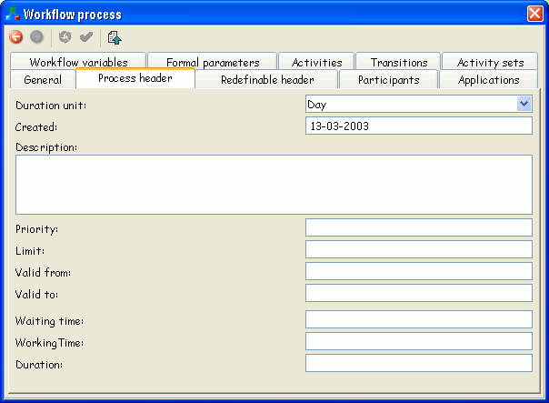
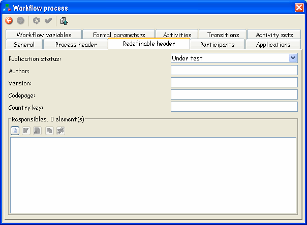
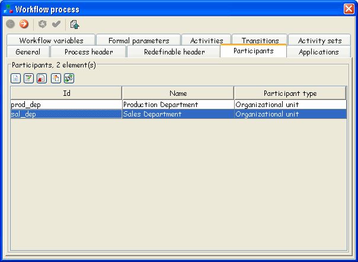
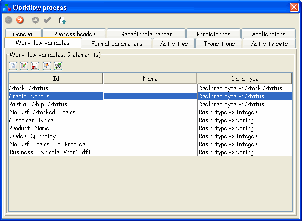
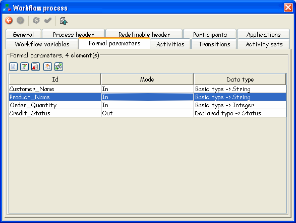
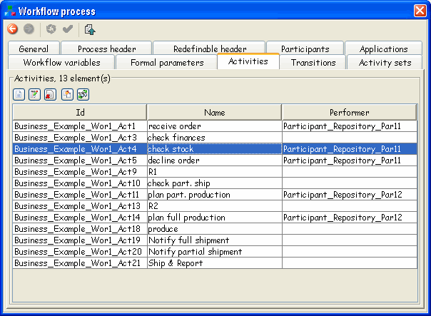
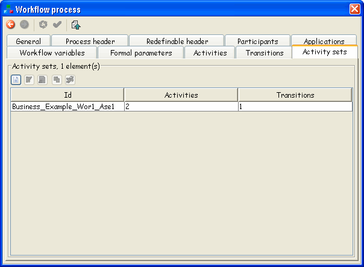
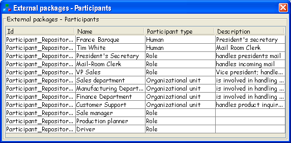
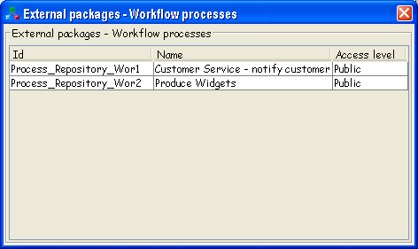

Graphical WfMC XPDL workflow editing made easy
Copyright © 2007 Together Teamlösungen EDV-Dienstleistungen GmbH. Permission is granted to copy, distribute and/or modify this document under the terms of the GNU Free Documentation License, Version 1.1 or any later version published by the Free Software Foundation; with the Invariant Sections being Introduction, The Graphical User Interface, Dialogs and Property Panels, XPDL elements, XPDL from scratch, Configuration, Customization, Extended Attribute Reference, Building from the source code, with the Front-Cover Texts being Preface, and with no Back-Cover Texts. A copy of the license is included in the section entitled "GNU Free Documentation License".
Together Teamlösungen EDV-Dienstleistungen GmbH DISCLAIMS ALL WARRANTIES, EXPRESS OR IMPLIED, INCLUDING BUT NOT LIMITED TO ANY WARRANTY THAT THE USE OF THE INFORMATION HEREIN WILL NOT INFRINGE ANY RIGHTS OR ANY IMPLIED WARRANTIES OF MERCHANTABILITY OR FITNESS FOR A PARTICULAR PURPOSE.
While every precaution has been taken in the preparation of this book, the publisher assumes no responsibility for errors or omissions, or for damages resulting from the use of the information contained in this book.
The Together logo, Enhydra, the Enhydra logo and the Enhydra Shark logo are registered trademarks of Together Teamlösungen EDV-Dienstleistungen GmbH. Java and all Java-based trademarks or logos are trademarks or registered trademarks of Sun Microsystems, Inc., in the United States States and other countries. Together Teamlösungen EDV-Dienstleistungen GmbH. is independent of Sun Microsystems.
In this document parts of the original XPDL 1.0 specification - WFMC-TC-1025 are used. The Workflow Management Coalition and its members are the owners of the copyright of this specification.
Table of Contents
- Preface
- 1. Introduction
- 2. The Graphical User Interface
- 3. Dialogs and Property Panels
- 4. XPDL elements
- 5. XPDL from scratch
- 6. Configuration
- 7. Customization
- 8. Extended Attribute Reference
- 9. Build guide
- A. GNU Free Documentation License
List of Figures
- 2.1. Default configuration layout
- 2.2. Main tool bar
- 2.3. Main tool bar shortcut groups
- 2.4. Info bar
- 2.5. The Graph Panel
- 2.6. Graph element context popup menus
- 2.7. XPDL View of a Package
- 2.8. XPDL View of a Process
- 2.9. XPDL View of an Activity
- 2.10. Properties component
- 2.11. Search Results
- 2.12. Problems component
- 2.13. WfXML Component
- 2.14. LDAP Component
- 2.15. LDAP Configuration Dialog
- 6.1. Undefined start example
- 6.2. Undefined end example
List of Tables
- 4.1. General attributes
- 4.2. Package Header
- 4.3. Redefinable Header
- 4.4. Conformance Class
- 4.5. Script element
- 4.6. General Attributes
- 4.7. Process Header
- 4.8. Redefinable Header
- 4.9. Type Declaration
- 4.10. Basic Data Type
- 4.11. External Reference
- 4.12. Workflow Participant
- 4.13. Participant Types
- 4.14. General attributes
- 4.15. Formal Parameters
- 4.16. External Reference
- 4.17. Relevant Data
- 4.18. Activities attributes
- 4.19. Transition
Table of Contents
Together Workflow Editor (http://www.together.at/together/prod/twe/index.html) is a visual tool for creating, managing and reviewing process definitions stored in WfMC XPDL syntax.
Put simple, Together Workflow Editor allows you to quickly create or view XPDL workflow definition files, check and store them for the further use. Once a definition is proven valid, it can be referenced by new definitions, thus shortening the time and effort needed to define workflow processes or imported into workflow engines capable of XPDL for execution.
From the Workflow Management Coalition website (http://www.wfmc.org):
The Evolution of Workflow Workflow Management consists of the automation of business procedures or "workflows" during which documents, information or tasks are passed from one participant to another in a way that is governed by rules or procedures. Workflow software products, like other software technologies, have evolved from diverse origins. While some offerings have been developed as pure workflow software, many have evolved from image management systems, document management systems, relational or object database systems, and electronic mail systems.
Improved efficiency - automation of many business processes results in the elimination of many unnecessary steps
Better process control - improved management of business processes achieved through standardizing working methods and the availability of audit trails
Improved customer service - consistency in the processes leads to greater predictability in levels of response to customers
Flexibility - software control over processes enables their re-design in line with changing business needs
Business process improvement - focus on business processes leads to their streamlining and simplification
Together Workflow Editor is available as an Open Source as the Enhydra JaWE (Java Workflow Editor) project under the GPL license.
Enhydra JaWE (http://jawe.enhydra.org) is an open source (http://www.opensource.org) project hosted by ObjectWeb (http://www.objectweb.org) , a worldwide consortium for open source middleware, with the goal to deliver a production quality tool for graphical creation and viewing of WfMC XPDL process definitions. It results from real world projects in which the painful task of writing XML with general purpose XML editors had to be done again and again. This project is developed mainly by employees of Together Teamlösungen EDV-Dienstleistungen GmbH. (http://www.together.at) respectively its subsidiary in Serbia but also contains lots of input and improvements from the many users worldwide. Enhydra JaWE has a rapidly growing community and is also integrated in other open source projects like Enhydra Server, Enhydra Enterprise (http://enhydra.objectweb.org) - a professional Java and J2EE application server and Enhydra Shark (http://shark.enhydra.org) - the most flexible Open Source WfMC XPDL workflow engine available. Its use is "Free as in Freedom" (http://www.gnu.org/philosophy/philosophy.html) and licensed under the GNU (http://www.gnu.org) LGPL license (http://www.gnu.org/copyleft/lesser.html) defined by the Free Software Foundation FSF (http://www.gnu.org/fsf/fsf.html).
Commercial support for Together Workflow Editor including development of project specific extensions or integration into other environments and projects is offered by Together Teamlösungen EDV-Dienstleistungen GmbH. located in Vienna/Austria/Europe (mailto: office@together.at).
This book is designed to be the clear, concise explanation and reference to Together Workflow Editor and its usage to graphically design and view WfMC XPDL process definitions.
We hope to answer all the questions that you might have about all the various XPDL elements, their meanings and how to view and edit them with Together Workflow Editor. In particular, this covers the following subjects:
The structure of the editor and its components.
Editing dialogs and property panels for all XPDL elements.
The relationship between XPDL and Together Workflow Editor including in depth explanantions of all XPDL elements.
Information how to configure and customize Together Workflow Editor Professional to your needs.
A step by step introduction how to build XPDL definitions from scratch.
We expect that most readers will have some familiarity with XML and workflow. Even if you just know what processes and activities are, you’re in good shape. Although this book provides basic introductions to key concepts, it may not suffice as your only tutorial about XPDL, XML, and workflow systems.
Readers of this book are typically developers, workflow modelers and workflow system administrators.
Some sections in this book describe certain environments like Microsoft Windows or Linux, although there is nothing about Together Workflow Editor that makes it unsuitable for the Mac or any other environment of your choice, as long as the defined software prerequisites (basically a JRE - Java Runtime Environment 1.4) are met.
This book is divided into the following chapters:
Introduction - What is Together Workflow Editor all about ?
The Graphical User Interface - Explanation of the user interface components, menus and toolbars
Dialogs and Property Panels - How to handle editor dialogs and XPDL property panels
XPDL elements - What they are, how they are related and how to create, edit and view them
XPDL from Scratch - How to create your first XPDL file
Configuration - How to tailor the Editor to your needs
Customization - How to extend the Editor with additional functionality
Extended Attribute Reference - XPDL Extended Attributes used by the Editor itself
Build guide - How to compile, build and package your own version from the source code
Please help us to improve future editions of this book by reporting any errors, inaccuracies, bugs, misleading or confusing statements, and plain old typos that you find. Email your findings to twe@together.at. Thanks.
Many thanks go to the Swiss company ABACUS (http://www.abacus.ch) for sponsoring major parts of the Together Workflow Editor Version 2.0 development.
All authors are directly involved in one way or the other into the core development of Together Workflow Editor Professional and Enhydra JaWE.
Together Teamlösungen GmbH has been active for many years primarily in the area of workflow, database and document management solutions.
In addition to the organizational and implementation services, these application areas are supplemented by the operation of solutions (system rollout, 24x7 hotline, training) as well as product development, consulting services (business process analysis and modelling), publications and presentations. The associated topics needed for real world projects, e.g. imaging, OCR, host integration, archiving, computer telephone integration, digital signatures, backup, performance tuning, reporting, systems administration and hardware sizing are also covered, continuously maintained and expanded.
Together Teamlösungen EDV-Dienstleistungen GmbH. is an active member of WfMC, directly involved into the development of the XPDL standards specification, and an active member of the Objectweb Open Source middleware consortium, sponsoring the development of most Enhydra.org projects hosted at ObjectWeb.
The Enhydra.org project has its focus on E-Business middleware software. It now consists of many developers from over 50 countries. You can count on the project group because it is backed by the Objectweb consortium, a truly open source oriented middleware consortium, and a number of big commercial sponsors. Many of these are able to offer commercial products, support, consulting and training.
The Enhydra.org Web site was initially created by Lutris Technologies, Inc. Starting from beginning of May 2002, ObjectWeb took over the sponsorship of the Enhydra initiative hosting. All Enhydra projects now use the ObjectWeb infrastructure and in particular the ObjectWeb Forge which is based on GForge.
Enhydra.org started with Enhydra, the first and leading Open Source Java/XML application server. It was initially created by Lutris Technologies, Inc. which already disappeared from the market. After 4 years in development it was open sourced on Janurary 15th 1999. They named the technology "Enhydra" after the California sea otter (Enhydra Lutris) - a popular inhabitant of Santa Cruz.
Big parts of Enhydra development are now sponsored by Together Teamlösungen EDV-Dienstleistungen GmbH. located in Europe (Austria, Serbia and Slovakia). One of the outcomes of this sponsorship is Enhydra JaWE, the open source part of Together Workflow Editor Professional.
JaWE - Java Workflow Editor - is the Open Source project of Together Workflow Editor Professional. It is fully useable to edit, view and save complete XPDL files and licensed under GPL. Sources are publicly available in the projects CVS repository hosted at ObjectWeb GForge.
Founded in August 1993, the Workflow Management Coalition (WfMC) is a non-profit, global organization of adopters, developers, consultants, analysts and university/research groups engaged in Business Process Management (BPM). Workflow or BPM is the technology that supports people to do their work. Resulting benefit is more efficiency, traceability,and quality improvements.
WfMC creates and contributes to process related standards and educates on the benefits of process automation. WfMC is the only standards organization that concentrates purely on process. WfMC created XPDL and Wf-XML and had influence on BPMN, OMG workflow interface, ASAP and many other process related standards.
ObjectWeb is an international consortium fostering the development of open-source middleware for cutting-edge applications: EAI, e-business, clustering, grid computing, managed services, workflow and a lot more.
It is an open-source software community created at the end of 1999 by Bull, France Telecom R&D and INRIA. Its goal is the development of open-source distributed middleware, based on flexible and adaptable components. These components range from specific software frameworks and protocols to integrated platforms. ObjectWeb developments follow a systematic component-based approach.
In 2002, ObjectWeb evolved into an international consortium hosted by INRIA (next to W3C, the World Wide Web Consortium), the French National Institute for Research in Computer Science and Control. The consortium is an independent non-profit organization open to companies, institutions and individuals.
JGraph (http://www.jgraph.com) is a powerful, easy-to-use, feature-rich and standards-compliant open source graph component available for Java. This library is used in Together Workflow Editor for graphial representation of process layouts (graph component).
This book was written using DocBook (http://www.docbook.org) and the XML Mind XML Editor (http://www.xmlmind.com/xmleditor).
Table of Contents
By the end of this chapter you will know the prerequisites for installation, how and where to download the latest release binaries and source codes of Together Workflow Editor, how to install it on MS Windows or Linux and be able to use the provided XPDL examples.
Together Workflow Editor is a graphical editor for creating, editing, managing and reviewing WfMC XPDL process definition files.
Workflow management is an evolving technology with lots of vendors claiming their approach is the best. We have chosen an approach which relies on WfMC and XPDL, thus supporting efforts to establish the standard. Together Workflow Editor is based on version 1.0 of the XPDL XML schema published by WfMC.
The editor makes creating and editing XPDL easy. It represents all XPDL elements graphically through property panels and a graph component to give the user a better understanding and an overview of the process definitions. Various functions help in finding specific activities, participants, applications, errors in the model, etc.
The final output of the editor is an XML file (using the standardized WfMC XPDL schema) which can then be interpreted and executed by all WfMC XPDL compliant workflow engines.
Together Workflow Editor accomplishes three main goals:
Reading of WfMC XPDL files (no matter from which tool they initially come from) from the filesystem (or a Wf-XML server in the Professional Edition)
Graphical representation and guided editing/modelling of process definitions
Writing of WfMC XPDL process definition XML files to the filesystem (or a Wf-XML server in the Professional Edition)
The WfMC Workflow Management Coalition (http://www.wfmc.org) promotes the advancement of process management technology standards and their use by the industry.
The Java 2 SDK or Java 2 JRE can be downloaded from http://java.sun.com .
The Together Workflow Editor home page is located at http://www.together.at/together/prod/twe/index.html.
JGraph (http://www.jgraph.com) is an open-source swing graph component used in Together Workflow Editor.
Enhydra Shark (http://shark.enhydra.org) - the most flexible Open Source WfMC XPDL workflow engine available
Table of Contents
The Together Workflow Editor user interface consists of several parts. The order and the number of the displayed parts depend on the actually used configuration. This chapter explains the default configuration layout.
Right below the title line of the editor window you will see the main menu, the main tool bar and the info bar. The rest of the window contains different components. The components are placed in the corresponding are depending on their type.
Each component is responsible either for providing a different view of the WfMC XPDL elements, for displaying some additional information about XPDL elements (such as validation problems) or for displaying the result of some search.

There are two areas on the left hand side: The upper area (marked as "Special Area") contains the Graph overview, the External package relations and the Transient package pool components. The lower area (marked as "Tree Area") contains the tree type components Navigator and Package tree.
There are also two areas on the right hand side: The upper area (marked as "Main Area") contains the Graph and the XPDL View components. The lower area (marked as "Other Area") contains the Properties, Search, Problems, WfXML and LDAP components.
(NOTE: by right-clicking on the tab you are able to close some component's view or to move it from one area to another)
See frame settings for details about the configuration of the main frame.
The rest of this chapter explains all these editor parts in detail.
This is the core of the Together Workflow Editor. All the actions needed for opening, creating and manipulating XPDL files and elements are here.
The actions in the main menu are organized in the following groups:
File
 New
NewThis action creates a new "empty" XPDL package.
 Open
OpenThis action opens an existing XPDL file. The file is chosen through the standard file selection dialog.
 Reopen
ReopenThis action reopens the currently edited XPDL file.
 Close
CloseThis action closes the currently open XPDL package / file.
 Save
SaveThis action saves the currently open XPDL package to the file. If no file name has been specified for the current package, the "Save As..." dialog will be shown.
 Save As...
Save As...This action saves the currently open XPDL package into a file with a new filename and location specified through a standard file dialog.
Recent Files This action opens a sub-menu with a listing of recently used files which can be re-opened.
 Exit
ExitThis action exits the editor applciation. An appropriate dialog will appear if the current work hasn't been saved into a file.
Edit
 Undo
UndoThis action reverts the last operation on the XPDL model. Every operation / change performed to the XPDL model can be undone step-by-step without any limits.
 Redo
RedoThis action repeats the previously undone XPDL model operation.
 Cut
CutThis action will remove the currently selected elements from the model and place them into the clipboard, allowing the user to paste them somewhere else. This operation uses the internal clipboard of the editor.
Any previous content of the internal clipboard is discarded when this action is executed.
 Copy
CopyThis action will copy the currently selected elements into the clipboard, allowing the user to paste them somewhere else. This operation uses the internal clipboard of the editor.
Any previous content of the internal clipboard is discarded when this action is executed.
 Paste
PasteThis action will copy the elements from the internal clipboard to the current location. It will only be enabled if the internal clipboard currently contains at least one element.
 Delete
DeleteThis action removes the currently selected elements from the XPDL model.
 Properties
PropertiesThis action opens a dialog to define properties for the currently selected element.
Search
 Search
SearchThis action finds XPDL elements based on certain search criteria.
 References
ReferencesThis action seaches for all elements in the XPDL model which refer to the currently selected element.
Package
 Check validity
Check validityThis action runs a check on the XPDL model's validity based on the WfMC specification and produces a problem list.
 Insert new process
Insert new processThis action inserts a new workflow process definition into the XPDL package.
 Namespaces
NamespacesThis action shows a dialog for handling the package's namespaces.
 Package properties
Package propertiesThis action opens a dialog for editing the XPDL package properties.
 Processes
ProcessesThis action shows dialog with list of the workflow process definitions defined in selected XPDL package.
 External packages
External packagesThis action opens a dialog to handle references to external XPDL packages.
 Add external package
Add external packageThis action opens a dialog to import / reference an external package.
 Remove external package
Remove external packageThis action removes an external package reference.
 Type declarations
Type declarationsThis action shows a dialog to manage type declarations.
 Participants
ParticipantsThis action shows a dialog to managing participants.
 Applications
ApplicationsThis action shows a dialog to manage applications.
 Workflow variables
Workflow variablesThis action shows a dialog to manage variables.
 Open referred document
Open referred documentThis action opens the document attached to the package.
Process
 Process properties
Process propertiesThis action opens a dialog to edit the properties of the selected process.
 Participants
ParticipantsThis action shows a dialog to manage participants of the selected process.
 Applications
ApplicationsThis action shows a dialog to manage applications of the selected process.
 Workflow variables
Workflow variablesThis action shows a dialog to manage variables of the selected process.
 Formal parameters
Formal parametersThis action shows a dialog to manage parameters of the selected process.
 Activity sets
Activity setsThis action shows a list of all activity sets contained within the selected process.
 Activities
ActivitiesThis action shows a list of activities contained within the selected process.
 Transitions
TransitionsThis action shows a list of transitions contained within the selected process.
External Packages
 External participants
External participantsThis action shows a list of all participants that are in the external packages.
 External processes
External processesThis action shows a list of all processes that are in the external packages.
 External applications
External applicationsThis action shows a list of all application that are in the external packages.
Settings
Language
This menu shows the list of languages you can use (currently English, German, French, Portuguese and Serbian). The selection takes effect after you restart the editor.
Configuration
This menu shows the list of configurations that you can use (currently default, shark, wfmopen, purexpdl and samples-loopactivity configurations are provided). After you select the configuration, the editor is being re-configured to use this new configuration with all of its customizations (special validation, restrictions, etc.)
Help
 Manual
ManualThis action opens the this User Guide.
 About Together Workflow Editor
About Together Workflow EditorThis action shows the version information about the editor.
As explained in the previous section, the main menu covers all actions needed for creating, viewing and editing XPDL definitions. The Main tool bar contains shortcuts for various actions of the main menu.

Main tool bar shortcuts are organized similar to the actions in the main menu. All actions are explained in the previous section.

The Info bar shows some basic information about the selected workflow elements. It displays the package name, the process name and the file/package that is being edited.

The Info bar offers the possibility to select the desired package, process or file:
a click on the
 package icon offers a pop-up
list of all packages (the main package you are editing and all the
packages it references directly or indirectly).
package icon offers a pop-up
list of all packages (the main package you are editing and all the
packages it references directly or indirectly).a click on the
 process icon offers a pop-up
list of all processes (within the currently selected
package).
process icon offers a pop-up
list of all processes (within the currently selected
package).a click on the
 file icon offers a pop-up list of
recently opened files.
file icon offers a pop-up list of
recently opened files.
| The Graph Overview is just what its name says - a graphical overview of the process and activity set graph. It shows the whole graph of the selected process or activity set in a way that you can see all the graph elements in the overview area at once. This overview also provides an easy way to select elements by clicking on the elements or dragging a selection rectangle in the small graphics. All selections done in the overview are immdiately reflected in the main graph. This way even bigger portions of the graph can be selected at once without having to scroll through the main graph. If an element is selected in the Graph Overview that is currently not visible in the main graph, the main graph is automatically scrolling to show the selected element thus making graphical navigation in big processes very easy. The Graph Overview can be hidden by clicking on the "Overview" tab with the right mouse button and selecting "Close". It can be shown again by selecting "Add Overview" in the context menu of the "External package relations" tab or the background of the "Special Area". |

| The External Package Relations component gives you a graphical tree overview of the current package and all of its directly or indirectly referrenced external packages. So it provides you the information about the relations between packages starting at the current package. The picture on the left hand side shows a package (called "Business Example") that references three other external packages: "Participant Repository", "Application Respository" and "Process Repository". The external package "Process Repository" again references (the same) two external packages: "Participant Repository" and "Application Repository". The "Expand All" and "Collapse All" buttons on top of the tree can be used to show or hide the subtree. The External Package Relaltions can be hidden by clicking on the "Overview" tab with the right mouse button and selecting "Close". It can be shown again by selecting "Add External package relations" in the context menu of the "Overview" tab or the background of the "Special Area". |

The External Package relations background color can be changed through the
extpkgrelations.properties file. (BackgroundColor = R=?,G=?,B=?)
As with all other components you are also able to change the content of the toolbar and the order of the toolbar buttons.
Transient packages are not related to any part of the WfMC XPDL specification but are a unique feature of Together Workflow Editor. Transient packages are always available to the editor user (independently of the main package that is currently being edited) and the editor user can always copy elements (such as commonly used Activities and Transition structures, Applicatons or Participants definitions, etc.) from the transiently referrenced package into the currently edited package. XPDL Packages imported as transient are neither being validated for errors nor are these transient referrences stored in the current XPDL file. They are just shown for your convenience during modelling work. If a transient package is referencing other packages the user must be aware that the referenced packages won't be imported automatically. The Transient Package Pool displays all the transiently opened packages. Using the buttons on top you are able to add new or remove existing transiently referrenced packages from the editor. The Transient Package Pool can be hidden by clicking on the "Transient package pool" tab with the right mouse button and selecting "Close". It can be shown again by selecting "Add Transient package pool" in the context menu of the "Overview" tab or the background of the "Special Area". |
You are able to pre-configure Together Workflow Editor to load certain XPDL packages in transient mode (see togwebasic.properties) at startup to have access to most commonly needed XPDL elements for copying them into the XPDL package you are editing. This feature is typically used for copying certain workflow design patterns from a pattern pool into processes. Predefined common workflow patterns can be found in the Together Workflow Editor installation directory "...\examples\valid\WorkflowPatterns\".
You should be aware that there is a major difference in reusing XPDL elements from external packages and copying XPDL elements from other (transiently loaded) XPDL packages. Common subflows, application or participant definitions should normally be reused by modelling externally referenced packages instead of copying definitions redundantly into other packages.
The Transient Package Pool background color can be changed through the transientpkgpool.properties file. (BackgroundColor = R=?,G=?,B=?)
As with all other components you are also able to change the content of the toolbar and the order of the toolbar buttons.
The Graph is the main component of Together Workflow Editor. It displays the graph representing the selected process or activity set. It offers the possibility to insert new elements into the graph and to visually define the flow / logic of the workflow process you are modelling.

The Graph has its own toolbars with action Shortcuts to customize the view of the process, inserting new process elements or modify existing process elements.
The toolbar on top of the graph consists of the following actions:

|
This action saves the graphical view of the current graph into a JPG format file. |

|
This action saves the graphical view of the current graph into an SVG format file. |

|
This action zooms into the graph. |

|
This action displays graph in its actual size. |

|
This action zooms out of the graph. |

|
This action moves the selected participant up or left depending on the current participant orientation of the graph. |

|
This action moves the selected participant down or right depending on the current participant orientation of the graph. |

|
This action displays the part of the graph shown before the current part. |

|
This action displays the part of the graph shown after the current part. |

|
This action inserts the start and end bubbles into the graph. |

|
This action removes the start end bubbles from the graph. |

|
This action changes the graph's participant orientation from left/right to top/bottom and vice versa. |

|
This action performs an automatic layout of the graph. |

|
This action inserts a new activity set. |

|
This action inserts an existing participant into the graph. |

|
This action selects an existing activity set. |
The toolbar on the left hand side of the graph consists of the following actions:
 | This action switches the mouse cursor to the selection mode. |
 | This action inserts a new participant into the graph. |
 | This action inserts a new "free text expression" participant into the graph. |
 | This action inserts a "common expression participant" into the graph. |
 | This action inserts a start of a process or activity set. |
 | This action inserts an end of a process or activity set. |
 | This action inserts an activity without implementation (manual activity performed by a human) into the graph. |
 | This action inserts a tool activity into the graph |
 | This action inserts a subflow activity into the graph. |
 | This action inserts a block activity into the graph. |
 | This action inserts a route activity into the graph. |
This action inserts a transition into the graph. | |
This action inserts an exception transition into the graph. |
The Graph provides all functions to handle participants, activities and transitions. All standard editor functions like insert, delete, move and select are supported.
New elements are inserted into the graph in two steps. First select the button of choice in the graph toolbar to change the mouse cursor into the appropriate insert mode. Then click into the graph to insert the selected element. The mouse cursor will remain in the current insert mode until you click the right mouse button, press the ESC key on your keyboard or switch to another mode by selecting a different button in the graph toolbar.
Inserting transitions into the graph is somewhat different: Transitions begin and end points must be activities. Clicking on the empty background of the graph while inserting a transition will insert a graphical break/routepoint. If insertion of a transition is started and the right mouse button or the ESC key is pressed, the current insert operation is cancelled and the mouse cursor stays in transition insert mode.
Elements in the graph are selected with by simply clicking on them with the left mouse button. You can select a group of elements by clicking with the left mouse button on the empty background of the graph and dragging a rectangle around some elements or by using the SHIFT or CTRL key during left mouse clicks on the individual elements.
To move elements to a new location just drag them with the left mouse button whereever you like.
Double clicking on a graph element opens the property dialog for the element (except for block and subflow activities for which the appropriate graph will be opened).
A right mouse click on an element in the graph will open the context popup menu of the element. The content of the context popup menu depends on which element was clicked on:

The empty background represents the process itself and only the Paste action can be performed to copy elements from the internal clipboard to the selected location.
Activities will show the standard edit functions. You can cut, copy, delete or edit properties of the selected activity.
Transitions will allow you to add a new break point, remove an existing one, delete the transition, edit the transition properties or change the transition style.
Participants can be remove, deleted, edited moved in the graph.
Common expression participants (shown as separate swimlanes in the graph) can be associated with a new performer expression.
Be aware that there is a fundamental difference between removing a participant and deleting it:
When a participant is removed, it is removed from the selected process/activity set graph but it is still present in the XPDL model/package. However all the activities contained in a swimlane representing the participant will be removed from the current graph.
When a participant is deleted, it is being deleted from the entire XPDL model/package but the activities contained in a swimlane representing the participant won't be deleted from the model. They will be placed into the Graph's special swimlane called Free text expression participant.
Start / end bubbles only offer the delete action.
If a Graph is empty (i.e. when a new process is created) the first thing to be added drawn is a participant. When at least one participant swimlane is visible you can add activities and transitions.
The available types of participants are:
-
"Role" participant
-
Free text expression participant
-
Common expression participant
The available types of activities are:
- Normal
activity (manual activity without implementation)
- Tool
activity
-
Sub-flow activity
- Block
activity
- Route
activity
The available types of transitions are:
 Condition
transition
Condition
transition Exception transition
Exception transition
When inserting new participants into the graph, the default participant type is "Role". To change the participant type double left click on the swimlane title to get its property panel. Inserting new participants (as opposed to referencing existing ones) means creating a new participant on the selected process level.
Free text expression participant and Common expression participant are not participants in the sense of XPDL but a special visualization of performer expressions of activities.
The Graph represents activity performers as swimlanes. When an activity is inserted or moved into a particular swim line, it's performer will be updates to the participant represented by the swimlane. In the case of Common expression and Free text expression participants the activity's performer will be set to the expression defined as a property of the graph's common expression participant swimlane object. When the activity is inserted or moved into the free text expression participant any expression can be set for the activity performer field but by default performer expression won't be defined.
Normal activity enables you to insert an activity that will be performed by a human (so called manual activity) - it will appear in the user's worklist.
Tool activity enables the definition of applications that are required for the enactment engine to run in order to perform the activity.
Subflow activity is a type of activity whose implementation is another workflow process definition.
Block activity executes an ActivitySet (set of self-contained activities/transition maps). It is something like an embedded subflow process.
Route activity does not implement any action. It is used for synchronization and conditional branching only.
A transition binds two activities but it can also be a circular transition from a certain activity to itself. A straight line with an arrow pointing to the target object represents the transition in the Graph. The toolbar offers two kinds of transitions: A Condition transition (normal transition) or an exceptional transition. The type of a transition can be changed through its property panel.
The Graph configuration is done through the
togwegraphcontroller.properties file.
The following parameters can be set:
Graph.FontSizedemo
This property will set font size used in graph (for activity name, etc.). Values: integer
NOTE: The graph font size can be set independently of the font size for the rest of the editor.
Graph.GridSize
The distance between position grid dots. Values: integer
Graph.ShadowWidth
The width of the shadow when displaying activities in the graph. Values: integer
Graph.NameWrapping
Defines if the text representing the names of activities and participants displayed in the graph will be wrapped if they are too long. Values: true/false
Graph.ShowGrid
Defines if the graph position grid will be shown. Values: true/false
Graph.ShowIcon
Defines if the graph elements should display their icons. Values: true/false
Graph.ShowShadow
Defines if activity shadows should be shown. Values: true/false
Graph.ShowTransitionCondition
Defines if transition conditions should be displayed in the graph. Values: true/false
Graph.ShowTransitionNameForCondition
Defines if the name of the transition should be shown instead of the condition of the transition. This setting only has effect if the Graph.ShowTransitionCondition parameter is set to true. Values: true/false
Graph.DefaultTransitionStyle
Defines the default transition style when inserting new transitions in the graph. Possible values: NO_ROUTING_ORTHOGONAL, NO_ROUTING_SPLINE, NO_ROUTING_BEZIER, SIMPLE_ROUTING_ORTHOGONAL, SIMPLE_ROUTING_SPLINE and SIMPLE_ROUTING_BEZIER
Graph.UseBubbles
Defines if starting and ending activities should be marked with start and end bubbles. Otherwise, starting and ending activities will be marked with a different color (depending on other Graph parameters). Values: true/false
Graph.WrappingStyleWordStatus
Defines if text wrapping should be based on whole words (if possible). This setting only has effect if the Graph.NameWrapping parameter is set to true. Values: true/false
Graph.TextPosition
Determines the position of text inside elements. The icon (if configured to show) will always be shown at the opposite side. Values: up, down, left and right.
Graph.HistorySize
Defines the size of the previous/next panel history. If the parameter is set to a value less than zero, the history is unlimited. Values: integer
Graph.ActivityHeight
The Graph's activity object height in pixels. Values: integer
Graph.ActivityWidth
The Graph's activity object width in pixels. Values: integer
Graph.DrawBlockLines
If this parameter is set to true, block activities will be drawn differently. Values: true/false
Graph.DrawSubflowLines
If this parameter is set to true, subflow activities will be drawn differently. Values: true/false
Graph.ParticipantMinHeight
The participant swimlane's minimum height in pixels. Values: integer
Graph.ParticipantMinWidth
The participant swimlane's minimum width in pixels. Values: integer
Graph.ParticipantNameWidth
Defines how much space (in pixels) of the swimlane should be reserved for participant names. Values: integer
Graph.ActivitySelectedColor
The color for selected activities. Values: R=?,G=?,B=? (where ? represents an integer from 0 to 255).
Graph.BackgroundColor
The Graph background color. Values: R=?,G=?,B=? (where ? represents an integer from 0 to 255).
Graph.BubbleColor
The Graph bubble color. Values: R=?,G=?,B=? (where ? represents an integer from 0 to 255).
Graph.BubbleConectionColor
The color for bubble connections. Values: R=?,G=?,B=? (where ? represents an integer from 0 to 255).
Graph.HandleColor
The Color of break/routepoints of transitions (they are only visible when a transition is selected). Values: R=?,G=?,B=? (where ? represents an integer from 0 to 255).
Graph.GridColor
The color for position grid dots. Values: R=?,G=?,B=? (where ? represents an integer from 0 to 255).
Graph.MarqueeColor
The color for marquee rectangles. Values: R=?,G=?,B=? (where ? represents an integer from 0 to 255).
Graph.ParticipantBorderColor
The color for participant's swimlane borders. Values: R=?,G=?,B=? (where ? represents an integer from 0 to 255).
Graph.ParticipantCommonExpressionColor
The color for the common expression participants. Values: R=?,G=?,B=? (where ? represents an integer from 0 to 255).
Graph.ParticipantFreeTextExpressionColor
The color for the free text expression participant. Values: R=?,G=?,B=? (where ? represents an integer from 0 to 255).
Graph.TextColor
The color of the Graph text. Values: R=?,G=?,B=? (where ? represents an integer from 0 to 255).
Graph.StartActivityColor
If the parameter Graph.UseBubble is set to false, this color will be used for coloring starting activities. Values: R=?,G=?,B=? (where ? represents an integer from 0 to 255).
Graph.EndActivityColor
If the parameter Graph.UseBubble is set to false, this color will be used for coloring ending activities. Values: R=?,G=?,B=? (where ? represents an integer from 0 to 255).
Graph.StartEndActivityColor
If the parameter Graph.UseBubble is set to false, this color will be used for coloring activities that are at a same time starting and ending . Values: R=?,G=?,B=? (where ? represents an integer from 0 to 255).
As with all other components, you are also able to change the content of the toolbar and the order of toolbar buttons.
The XPDL view provides an XPDL text view of the selected elements. It shows the structure of the selected XML element as it will be saved in the XPDL file. Every time the selection is changed or a selected element is being updated, the XPDL View is automatically updated also.
If the selected element is a whole XPDL package then the XPDL View displays the whole package definition in the exact form as it will be written into the XPDL file (when the document is saved). Otherwise the XPDL View will display the part of the XPDL which holds the definition of the selected element. So, when a particular process is selected, the XPDL view displays the process definition part of XPDL as it will be written to the XPDL file, etc.
The following examples show different XPDL Views depending on the element type that is currently selected:


The XPDL view also offers a search box for finding desired text fragments in the currently shown XPDL fragment.
| The Navigator displays a
hierarchical view of the XPDL model. It shows packages,
processes, activity sets and activities. It is also very useful
for finding XPDL elements which are not valid according to the
XPDL specification. These elements will be marked with error
( The Navigator makes navigation through the XPDL model easier and offers a good way of element selection. It can also ease editing of XPDL by opening property dialogs directly from the elements in the tree. The available actions in the Navigator toolbar are expand all and collapse all. When expand all is selected the hierarchical tree will be expanded so that every element is visible. When collapse all is performed, only top element(s) will be made visible. A right mouse click on tree will display a popup menu. Besides the standard edit functions (cut, copy, paste, delete and edit properties) there are Expand all, Collapse all, Duplicate and References. Expand all and Collapse all will act like the actions on the toolbar with the selected element used as the root element of the action. So Expand all will make all children of the selected element visible. Duplicate will create a copy of the selected element. The only difference will be in the element id and name attributes (if they exist) which will get new values. The References action will search for references to the selected element in the whole XPDL model. |

The background and the selection colors can be set through the
packagenavigator.properties file.
BackgroundColor. Values: R=?,G=?,B=? (where ? represents an integer from 0 to 255).
and
SelectionColor. Values: R=?,G=?,B=? (where ? represents an integer from 0 to 255).
As with all other components you are also able to change the content of the toolbar and the order of toolbar buttons.
Similar to the Navigator the Package tree also displays a hierarchical view of the XPDL model. The difference between these two trees is the level of details. While the Navigator just shows packages, processes, activity sets and activities, The Package tree shows almost every element of the XPDL model.
| The Package tree offers the most detailled hierarchical view of the XPDL model. It graphically displays the whole hierarchy tree of all XPDL elements of the model you are editing, Id attributes, names, the package header, etc. The Package tree makes navigation through the XPDL elements easierIt can also ease editing of XPDL by opening property dialogs directly from the elements in the tree. The available actions in the Pakcage tree toolbar are expand all and collapse all. When expand all is selected the hierarchical tree will be expanded so that every element is visible. When collapse all is performed, only top element(s) will be made visible. A right mouse click on tree will display a popup menu. Besides the standard edit functions (cut, copy, paste, delete and edit properties) there are Expand all, Collapse all, Duplicate and References. Expand all and Collapse all will act like the actions on the toolbar with the selected element used as the root element of the action. So Expand all will make all children of the selected element visible. Duplicate will create a copy of the selected element. The only difference will be in the element id and name attributes (if they exist) which will get new values. The References action will search for references to the selected element in the whole XPDL model. |
This Package tree can be configured through the
detailpackagenavigator.properties file.
BackgroundColor - background color
SelectionColor - selection color
You are able to customize the Package tree in order to hide some complex element's sub-elements. For example: To hide Activity's Id, Deadlines, Priority and Limit, you should set the property
HideSubElements.Activity
to the following value:
HideSubElements.Activity = Id Deadlines Priority Limit
You are also able to customize which elements of some collection shouldn't be displayed. For example: To hide extended attributes which name attribute is "SpecEA" or "EASpec", you can define the property:
HideElements.ExtendedAttributes.Name = SpecEA EASpec
If you want to hide all elements use *. For example: To hide all extended attributes use:
HideElements.ExtendedAttributes.Name = *
As with all other components you are also able to change the content of the toolbar and the order of toolbar buttons.
Properties component displays selected XPDL element's properties.

By selecting an element, this component automatically displays the most relevant data about that element (such as name, id etc.).
Besides data, this component also offers a couple of operations:
| Displays properties of previously selected element (that element again becomes selected). |
| Displays properties of element selected after this element selection (the following element again becomes selected). |
 | Discards new values of properties (reverts to the values applied with last 'apply' action call). |
 | Applies new values of properties. |
| Opens a dialog with a full set of the properties for the displayed element. |
 | Shows parent XPDL element panel. |
This component can be configured through
propertiespanelcomponent.properties
file.
InlinePanel.ShowModifiedWarning - if set to true, and if user wants to leave the property panel (by using show previous, show next, show parent element panel actions or actions for closing the dialog) of the element for which he previously changed some properties (within the panel), the user is asked if he wants to save the changes, leave the panel without saving changes or to cancel the action.
InlinePanel.DisplayTitle - if set to true, panel will display element name beneath toolbar.
HistorySize - defines the size of the previous/next panel history. If set to the value less than zero, the history is unlimited.
Toolbar.ActionOrder.defaultToolbar - defines the content and the order of the dialog's toolbar.
There are properties which can be adjusted to fine-tune the basic element property panels L&F, such as alignment, TOP, BOTTOM, RIGHT, LEFT empty space in the panels, the width and height of the text boxes, etc. These are defined by the following set of the properties:
XMLBasicPanel.RightAllignment=false XMLBasicPanel.EmptyBorder.TOP=0 XMLBasicPanel.EmptyBorder.LEFT=3 XMLBasicPanel.EmptyBorder.BOTTOM=4 XMLBasicPanel.EmptyBorder.RIGHT=3 XMLBasicPanel.SimplePanelTextWidth=250 XMLBasicPanel.SimplePanelTextHeight=20
You are able to customize so called "group" panels, used to display some complex elements, in order to hide some complex element sub-elements. For example, in order not to display Activity's Id, Deadlines, Priority and Limit, you should set the property
HideSubElements.XMLGroupPanel.Activity
to the following value:
HideSubElements.XMLGroupPanel.Activity = Id Deadlines Priority Limit
You are able to customize which elements of some collection shouldn't be displayed within so called "table" panels. For example, if you don't want to display extended attributes which name attribute is "SpecEA" or "EASpec", you can define the property:
HideElements.XMLTablePanel.ExtendedAttributes.Name = SpecEA EASpec
You are able to customize so called "table" panels, used to display some complex element collections, in order to specify which sub-elements will be shown as a table columns. For example, when displaying activities, you can specify to show Activity's Id, Name, Performer, Type, Start mode, Finish mode and Deadlines:
ShowColumns.XMLTablePanel.Activities = Id Name Performer Type StartMode FinishMode Deadlines
There is another customization possible for the so called "combo box" panel. Hence, you can define for which elements the combo box will be disabled (by default nothing is disabled). For example, if you want to disable combo boxes for displaying Activity's Performer and Transition's From and To properties, you should specify the following:
XMLComboPanel.DisableCombo = Performer From To
As with all other components, you are also able to change the content of the toolbar, and the order of toolbar buttons.
Search component displays results of a References or Search action. It shows all elements that have a reference to the selected element in the first case, or all the elements found based on entered criteria in second case. Results are shown in hierarchical view.

Besides search results, this component also offers a couple of operations:
 | Expands hierarchical results view. |
 | Collapses hierarchical results view. |
 | Clears the result page. |
While left click on result select that element, right click will also bring popup menu. Popup menu has action for expanding and collapsing, bringing up properties and performing References action for selected element.
The background color could be changed through
searchnavigator.properties file. (BackgroundColor = R=?,G=?,B=?)
As with all other components, you are also able to change the content of the toolbar, and the order of toolbar buttons.
Problems component lists all the problems currently present in the XPDL model(s). If option for design-time validation (found in togwecontroller.property) is set to 'true', this list will be automatically refreshed (except for schema errors).

Results of action 'check validity' are also shown here, so if design-time validation is off, you can always re-check the XPDL model validity by calling this action from the Package's menu/toolbar.
The result table has five columns:
The first column (without title) is representing a type of a problem, which can be either error or warning and it's marked with appropriate icon.
The second column specifies the type of the error/warning (connection, logic, conformance or schema)
The third column is a description of the problem.
The fourth column displays the exact element where the problem occurs
The fifth column is a location of the first relevant parent of the problematic element (it could also be the problematic element itself).
Clicking on Element column selects the exact element which has an error/warning described. By clicking on any other column, appropriate parent element will be selected (e.g. if error is with actual parameter, clicking on element will select actual parameter, while clicking on some other column will select activity) - as already explained, sometimes these two are the same.
On the other hand, double-clicking opens a dialog for editing problematic element.
There is also a possibility to sort entries by the column - just click to the column header, and entries will be sorted by this column.
Problem component background color could be changed through
problemnavigator.properties file. (BackgroundColor = R=?,G=?,B=?)
As with all other components, you are also able to change the content of the toolbar, and the order of toolbar buttons.
Having this component, you are able to connect to a workflow engine which supports WfMC interface defined by WfMC, and to manage XPDL files on the engine.
To connect to a workflow engine, valid registry service URL must be entered. After you enter it, and press the button right to the URL, you should connect to the engine, and get a list of the process definitions already uploaded to the engine, as on the picture below:

The toolbar for this component contains buttons for performing actions for managing XPDLs on the engine. The actions are described in the following table:
 | Downloads XPDL from the engine. |
 | Uploads XPDL to the engine. |
 | Updates XPDL to the engine. |
| Clears the history (which you are able to select from a combo box) of most recently entered URLs of WfXML compliant engines. |
As with all other components, you are also able to change the content of the toolbar, and the order of toolbar buttons.
This enables you to connect to the LDAP based system, search for users and groups and import them into XPDL as Participants.

To be able to do this, you first need to configure LDAP parameters by selecting corresponding action from component's toolbar. This will bring you a dialog where you define how to access LDAP, names of attributes representing group and users, etc. as shown on the picture below:

The toolbar for this component contains buttons for performing actions for managing LDAP access. The actions are described in the following table:
 | Opens a dialog to configure parameters neccessary to connect to an LDAP and search for users and groups. |
 | Performs a LDAP search based on parameters entered in as a search criteria, and displays results in a table. |
 | Imports selected LDAP entries as XPDL Participants. |
 | Imports all LDAP entries as XPDL Participants. |
As with all other components, you are also able to change the content of the toolbar, and the order of toolbar buttons.
The advantage of using "LDAP defined participants" is that one can connect the LDAP server of its organization and create processes using the real user/group logins for participant Ids. When the engine enacts such a process, it could also browse the LDAP server for the certain users/groups, so you do not have to do "participant to real user mapping".
The default LDAP properties can be defined in ldap.properties configuration file:
#LDAPReferralHandling = follow #LDAPCountLimit = 0 #LDAPTimeLimit = 0 #LDAPHost=localhost #LDAPPort=389 #LDAPBaseDN= #LDAPObjectClassFilter=group #LDAPObjectClassFilterChoices=group,organizationalUnit,organizationalRole,user,person,organizationalPerson,inetOrgPerson,AllListed #LDAPSearchScope=SCOPE_SUB #LDAPSecurityLevel=UserAndPassword #LDAPSecurityUserDN=username@company.com #LDAPSecurityPassword=somepwd #LDAPGroupUniqueAttributeName=sAMAccountName #LDAPGroupNameAttributeName=displayName #LDAPGroupDescriptionAttributeName=description #LDAPUserUniqueAttributeName=sAMAccountName #LDAPUserNameAttributeName=displayName #LDAPUserDescriptionAttributeName=description #LDAPDistinguishedNameAttributeName=distinguishedName #Toolbar.ActionOrder.defaultToolbar = ConfigureLDAP SearchLDAP - ImportSelected ImportAll
Table of Contents
Standard dialog are dialogs for manipulation with input/output files.
| If changes made to the package are about to be discarded, the warning message appears asking if the changes should be saved. If the answer is "Yes", the current package will be saved. "No" will discard any changes since last save, and "Cancel" will drop out selected function. |

| This dialog offers file system browsing and choosing file to open. It is displayed when you want to open a new XPDL file for editing in TWE, when adding new external package reference, ... |
|


| The most of the dialogs for editing XPDL elements have a toolbar with a buttons for navigation between property panels, as well as for applying/reverting the changes in the currently displayed property panel. |
|

The toolbar buttons are:
| Shows previous panel. |
| Shows next panel. |
| Discards changes made after last apply action (reverts to previous state). |
| Applies the changes made in the panel. |
 | Applies the changes made in the panel and closes the dialog. |
| Shows parent element panel. |
Each XPDL element is represented by appropriate property panel for editing its properties.
There are some standard panels like the ones for entering element information through the text box, by choosing an item from a combo box, for managing a group of elements through a table or a list, the group panels containing that contain other panels, tab panels, etc.
Each panel can be displayed separately, or inside a more complex panel such as a group panel.
| Property panels that display any kind of a table or a list representing a group of the same kind of XPDL elements have toolbar with buttons to handle these elements. Elements may be processes, activities, activity sets, participants, transactions, applications, namespaces, workflow variables, type declarations, formal parameters, etc. |
|

The toolbar is displayed just above the table/list of elements:
 | Creates new element. |
 | Edits selected element. |
 | Deletes selected element. |
 | Duplicates selected element. |
 | Finds all other elements that are referencing selected element. The list of referencing elements is displayed within Search component. |
When the element from the property table/list is selected, appropriate event is send to all other TWE components in order to refresh their view, and to show their view of the selected element. For example, if we have displayed a property table panel for handling activities, clicking on table rows, different activities will be displayed in all other TWE components - Graph, Overview, Navigator and Package tree components will mark this activity, and XPDL View component will show the part of XML structure representing selected activity. On the other hand, External package relations, WfXML, Search and Problems component won't update the display.
The toolbar buttons are either enabled or disabled, depending if the action they are representing can or can't be performed on the current selection.
Table of Contents
This chapter describes how TWE works, corresponding to WfMC (Workflow Management Coalition) specifications (www.wfmc.org). WfMC provides an interface for workflow process definition. The interface defines a common meta-model for describing the process definition and XML schema for interchange of process definitions - XPDL (XML Process Definition Language). The focus is on XPDL schema elements, and TWE's property panels for editing them.
TWE is a tool for Process Definition modelling. The final output of this process modelling is a XPDL output file, which can be interpreted at runtime by the workflow engine(s). TWE accomplished three main goals:
Graphical representation of process definition
Export of process definitions to XPDL
Import of any valid XPDL and its graphical representation
TWE handles one (main) package at a time, although it displays in a read-only mode all the external packages of the main package (and all the external packages of external packages and so on). Main TWE component window is labeled Graph. It is the graphic representation of workflow process or activity set, depending on what is currently selected.
Participants are represented with swim lines which encapsulate other smaller blocks (don't be confused; participants can be horizontally or vertically oriented). Those blocks represent activities.
Lines which connect activities are transitions. Graph specific elements are Start and End bubbles. These elements are not the part of WfMC specification, although they appear in the resulting XPDL file as extended attribute elements.
The rest of XPDL elements can be accessed and modified through their panel properties.
| The workflow process definition interface defines a common interchange format, which supports the transfer of workflow process definitions between different products. A workflow process definition, generated by TWE, is capable of interpretation in different workflow run-time products. The principles of Process Definition Interchange are based on Meta-Model framework. This meta-data model identifies commonly used entities within a process definition, their relationships and attributes. A variety of attributes describe the characteristics of this limited set of entities. Using this Meta-Model, TWE can transfer models using an XPDL as a common exchange format. Beside this interchange, TWE is also used for internal representation of process definitions. The whole concept is shown on the picture: |
|

There is a mandatory minimum set of objects, which must be supported within XPDL. This "minimum meta-data model" identifies those commonly used entities within a process definition and describes their usage semantics. Extensibility is provided by the facility to encompass additional object attributes ("extended attributes") which can be included as extensions to the basic Meta-Model to meet the specific needs of an individual product or workflow system.
Corresponding to the previous picture with concept of Process Definition Interchange, this chapter gives overview of Meta-Model entities (Meta-Model framework) and explains representation of these objects in TWE (Internal representation) with XPDL attributes (XML representation) that are defined in it.
| The meta-model identifies the basic set of entities and attributes for the exchange of process definitions. |
|
For each of the above entities, there is an associated set of attributes (some mandatory and others optional) which describe the characteristics of the entity. If there is a need of using an additional characteristics, "extended attributes" for various entities may be defined to allow extension of the scope of the Meta-Model in a controlled manner.
All of these entities are maintained by TWE.
"Resource Repository " is external to the workflow process definitions. In some complex processes, participant declaration may refer to a resource repository, which may be on Organisational Model (OM). WfMC Meta-Model specification defines a simple in-built (Minimal) Organisational Model or permits access to an externally defined OM. Note that XPDL specification does not define or require a resource repository.
TWE works only with a Minimal Organisational Model so there is no external Organisational Model provided. In this model, there aren't any relationships between participants. TWE may refer (import) any external XPDL structure - External Package. That External XPDL file may contain whole Organisational Model, so that External Package can act like Resource Repository.
As it is shown in the previous picture, minimal process model includes various entities whose scope may be wider than a single process definition. In particular the definitions of participants, applications and workflow relevant data may be referenced from a number of process definitions. The Meta-Model assumes the use of a common process definition Resource Repository. Repository holds the various entity types comprising the process definition. Within the repository itself and to support the efficient transfer of process definition data to/from the repository, the concept of a PACKAGE is introduced, which acts as a container for the grouping of common data entities from a number of different process definitions, to avoid redefinition within each individual process definition. Each process definition contained within the package will automatically inherit any common attribute from the process model container, unless they are separately re-specified locally within the process definition.
It is possible to define several processes within one package, which may share the same tools (applications) and participants. The Package acts as a container for grouping together a number of individual process definitions and associated entity data, which is applicable to all the contained process definitions. |  |
You can chose to create one package per workflow process, which should contain all the necessary workflow processes as well as all the associated tools (workflow applications) and workflow participants. Another approach is to define just parts of one process definition or common parts of several processes within one package (e.g. a workflow participant list or a workflow application list), and then to reference it from other packages. Within a package, the scope of the definitions of some entities is global and these entities can be referenced from all workflow process definitions contained within the package. Those entities are:
Workflow Process Definition,
Workflow Participant Specification,
Workflow Application Declaration and
Workflow Relevant Data
TWE provides a way to manage above listed entities (within one package). On the picture showing main toolbar organization, you can see where is the toolbar part for handling the properties of the selected Package.
To create a new Package in TWE, you simply select File->New, or
click appropriate button in the toolbar (the first button on the left). If you are
currently editing some other XPDL file and there are some unsaved
changes there, prior to creating a new Package, TWE will ask you if you
want to save the changes.
It is important to say that actions represented by buttons shown on the toolbar picture (and also corresponding menu items) are applied to the currently selected package, which can be the main one or one of the externally referenced packages.
If you select the main package, you can modify its properties, but this is not possible for the external packages. These (external) packages are read-only, and you can only read their properties.
Table 4.1. General attributes
| Name | M/O | Description |
|---|---|---|
| Id | M (mandatory) | Used to identify the package. |
| Name | O (optional) | Name of the package. |
When you create a new Package in TWE, these attributes are getting a default value newpkg. It's up to user to change it to some meaningful values.
Table 4.2. Package Header
| Name | M/O | Description |
|---|---|---|
| XPDL Version | M | Version of XPDL. |
| Vendor | M | Defines the origin of this package definition and contains vendor's name, vendor's product name and product's release number. |
| Created | M | Creation date of workflow package. |
| Description | O | Short textual description of the workflow package. |
| Documentation | O | Operating System specific path- and filename of help file/description file. |
| Priority Unit | O | A text string with user defined semantics. |
| Cost Unit | O | Units used in Simulation Data (usually expressed in terms of a currency). |
The Package Header keeps all information central to a package. By default, when you create a new Package, XPDL version will be 1.0 (the version currently supported by TWE). If TWE reads a document that have XPDL version set to the value different then 1.0, it will report it as an error. When new package is created, Vendor attribute is set to Together and Created attribute to the current date and time of creation in ISO-8601 format.
Table 4.3. Redefinable Header
| Name | M/O | Description |
|---|---|---|
| Author | O | Name of the author of this package. |
| Version | O | Version of this package. |
| Code page | O | The code page used for the text parts. |
| Country key | O | Country code based on ISO 3166. It could be either the three digits country code number, or the two alpha characters country codes. |
| Responsible(s) | O | Workflow participants, that is responsible for this workflow package; the supervisors during run time (usually an Organisational Unit or a Human). It is assumed that the supervisors are responsible during run time. |
| Publication Status | O | Status of the Package. Possible values are:
|
The redefinable header covers those header attributes that may be defined at the package definition header and may be redefined in the header of any process definition.
If publication status is set to Released, by default TWE does not allow saving of such XPDL document if it contains any kind of errors or warnings (there is a configuration property AllowInvalidPackageSaving in togwecontroller.properties file, which you can change in order to always allow saving of document).
Table 4.4. Conformance Class
| Name | M/O | Description |
|---|---|---|
| Conformance Class | O | Describes the Conformance Class to which the
definitions in this package are restricted to. Possible values
are:
|
The conformance class declaration allows description of the conformance class to which the definitions in this package definition are restricted to. The specified class applies to all the contained process definitions. TWE supports all defined conformance classes. This means that when creating graphs (networks of activities and transitions) for a WorkflowProcess or ActivitySet, TWE will report as an error if graph conformance is not satisfied.
Table 4.5. Script element
| Name | M/O | Description |
|---|---|---|
| Type | M | Identifies the scripting language used in expressions. It is recommended that the Type will be selected from the following strings: text/javascript, text/vbscript, text/tcl, text/ecmascript, text/xml. This |
| Version | O | This is the version of the scripting language. |
| Grammar | O | This is a reference to a document that specifies the grammar of the language. It could be, for example, an XML schema, a DTD, or a BNF. |
The Script element identifies the scripting language used in XPDL expressions. In the runtime, workflow engine should consider the type specified, and interpret all expressions using appropriate scripting language interpreter. So, after specifying the scripting language type, make sure you are writing all the expressions (for transition conditions, actual parameters, deadline conditions, etc.) according to the language syntax.
In TWE, the icon from package toolbar (or package menu) is used
for defining above mentioned properties, as well as all other package
properties and sub-elements, through appropriate property panels.
Also, you can get property panel for any Package element by selecting
it in Package tree component, and choosing Properties action from the
edit menu or toolbar.
Package property panel contains a lot of different data about the main XPDL element - Package. Actually, you are able to access almost any XPDL element panel by navigating through the Package properties panel. All information are organized in several tabs: general, package header, redefinable header, external packages, type declarations, participants, applications, workflow variables, workflow processes and namespaces
All the tabs that will be mentioned can be also displayed as a separate property panels.
General tab - displays general package data

Tab has tree parts. First part contains package's id, name and graph conformance. As already mentioned, TWE supports and validates XPDL depending on specified conformance level.
Second part contains information about script language: type, version and grammar.
Third part displays list of package's external attributes and offers toolbar with operations to handle extended attributes
Package header tab
Default value for field XPDL version is 1.0, and for field vendor is Together.
Field Created contains creation time and date, and field Description contains short package's description.
Documentation field binds external file with package.
 button opens a
choose file dialog for finding appropriate
one.
button opens a
choose file dialog for finding appropriate
one.
Redefinable header tab

Tab has two parts. First part contains the following fields: Publication status (can have one of the following values: under revision, under test, or released), Author (package's author), Version (version number for the package), Codepage and Country key.
As already mentioned, TWE lets you save your work despite the errors if you didn't set Publication status to Released. In the case you've set it to released, it won't be permitted to save your work until you correct all the errors. This behaviour can be configured in togwecontroller.properties file, by setting the value of property AllowInvalidPackageSaving to true.
Second part, called Responsibles, contains list of all responsibles for the package and operations for managing the list. Any participants known to this package can become the responsible.
When you press the button for defining new responsible, this action invokes a window with a combo box with a list of all possible participants you can chose.
Responsible person must be a participant that is already defined. When adding "Responsibles" for the whole package, participants defined inside that package or inside externally referenced packages can be added, and when adding "Responsibles" for a process, you can also add participants defined for this process.
Beside the combo box with a list of the responsibles, there is a shortcut button. If you press this button, the property panel for the participant selected in combo box will be shown.
External packages tab
It contains a list of all external packages for the package and toolbar buttons for managing the listed external package elements.

Type declarations tab

It contains information about all type declarations in a form of a table and operations for their managing. Every table row (type declaration) is described with id, name (optional value) and type. It contains toolbar buttons for managing the listed type declaration elements.
Participants tab
It contains information about all package's participants. Every table row (participant) is described with id, name (optional value) and participant type. It contains toolbar buttons for managing the listed participant elements.

Applications tab

It contains information about all package's applications. Every table row (application) is described with id and name (optional value). It contains toolbar buttons for managing the listed application elements.
Workflow variables tab
It contains information about all package's workflow variables. Every table row (workflow variable) is described with id, name (optional value) and data type. It contains toolbar buttons for managing the listed workflow variable elements.

Workflow processes tab

It contains information about all package's workflow processes. Every table row (workflow process) is described with id, name (optional value) and Access level (optional value, can have one of the values: private or public). It contains toolbar buttons for managing the listed workflow process elements.
Namespaces tab
This property panel shows all namespaces defined within the XPDL document. User can add additional namespaces. Usually, additional namespaces are needed to insure document validity when user defines "complex" extended attributes. It contains information about all package's namespaces in a form of a table and operations for their managing. Every table row (namespace) is described with name and location. It contains toolbar buttons for managing the listed namespace elements.

The Process Definition entity provides contextual information that applies to other entities within the process. This describes the process itself. It is a container for the process itself and provides information associated with administration (creation date, author, etc.) or to be used during process execution (initiation parameters to be used, execution priority, time limits to be checked, person to be notified, simulation information, etc.). Definition entity thus provides header information for the process definition and is therefore related to all other entities in that process.
The Workflow Process Definition defines the elements that make a workflow. It contains definitions or declarations, respectively, for Activity and, optionally, for Transition, Application, and Process Relevant Data entities.
A Workflow Process may run as an implementation of an activity of type subflow; in this case parameters may be defined as attributes of the process.
TWE provides a way to manage process definition entities. On the picture showing main toolbar organization, you can see where is the toolbar part for handling the propertiesOn this picture you can see the organization of the selected WorkflowProcess.
If you create (override) some process with the same Id as the one from the external package, only the one from the current package can be used as the implementation process of sublfow activity.
Typically, you will create a new
process by pressing the button from the main toolbox or selecting appropriate
item from Package menu.
WorkflowProcess attributes can be divided in few logical parts:
Table 4.6. General Attributes
| Name | M/O | Description |
|---|---|---|
| Id | M | Used to identify the workflow process (Read Only). |
| Name | O | Name of the model, used to identify the workflow process. |
| AccessLevel | O | The Access level of a process may be either PUBLIC or PRIVATE. If PUBLIC, the process may be invoked by an external system or application. A process with private access may only be invoked from a SubFlow Activity. |
Table 4.7. Process Header
| Name | M/O | Description | ||||||
|---|---|---|---|---|---|---|---|---|
| Duration Unit | M | Describes the default unit to be applied to an integer
duration value that has no unit tag. Possible units
are:
| ||||||
| Created | O | Creation date of workflow process definition. | ||||||
| Description | O | Short textual description of the process. | ||||||
| Priority | O | The priority of the process type. Default: Inherited from Model Definition. | ||||||
| Limit | O | Expected duration for time management purposes (e.g. starting an escalation procedure etc.) in units of DurationUnit. It is counted from the starting date/time of the Process. The consequences of reaching the limit value are not defined in this document (i.e. vendor specific). It is assumed that in this case at least the Responsible of the current process is notified of this situation. | ||||||
| Valid From | O | The date that the workflow process definition is active from. Empty string means system date. Default: Inherited from Model Definition. | ||||||
| Valid To | O | The date at which the process definition becomes valid. Empty string means unlimited validity. Default: Inherited from Model Definition. | ||||||
| Waiting Time | O | Describes the amount of time, which is needed to prepare the performance of the task (time estimation) (waiting time is provided by the analysis environment and may be updated by the runtime environment) in units of DurationUnit. | ||||||
| Working Time | O | Describes the amount of time the performer of the activity needs to perform the task (time estimation) (working time is needed for analysis purposes and is provided by the evaluation of runtime parameters) in units of DurationUnit. | ||||||
| Duration | O | Expected duration time to perform a task in units of DurationUnit. |
In Process Header Tab there is Time Estimation group where we define Waiting Time, Working Time and Duration. This is used for simulation purposes.
Table 4.8. Redefinable Header
| Name | M/O | Description | |||
|---|---|---|---|---|---|
| Publication Status | O | Status of the Workflow Process Definition. Default:
Inherited from Model Definition.
| |||
| Author | O | Name of the author of this workflow process definition. (the one who puts it into the package) | |||
| Version | O | Version of this workflow process definition. | |||
| Codepage | O | The codepage used for the text parts. Default: Inherited from Model Definition. | |||
| Country key | O | Country code based on ISO 3166. It could be either the three digits country code number, or the two alpha characters country codes. Default: Inherited from Model Definition. | |||
| Responsible(s) | O | Workflow participant, who is responsible for this workflow process (usually an Organisational Unit or a Human). It is assumed that the supervisor is responsible during execution of the process. Default: Inherited from Model Definition. |
The responsibles for Process are added in the same way as it is at Package level, which is explained earlier in text.
In TWE, you can get the property panel to edit all workflow
process attributes by clicking on a toolbar icon , or selecting the appropriate menu item.
It contains a lot of different data about workflow process. All information are organized in several tabs: general, process header, redefinable header, participants, applications, workflow variables, formal parameters, activities, transitions and activity sets.
All the tabs that will be mentioned can be also displayed as a separate property panels, either by selecting appropriate element in a Package tree, and asking for its properties, or by selecting appropriate toolbox button or menu item.
General tab - displays general process data

Tab has two parts. First part contains process id, name (this name will appear in window's title bar) and access level (can be private or public).
Second part shows all process extended attributes and also offers operations with them.
Process header tab
This dialog defines elements and attributes of XPDL's ProcessHeader element.
Field Duration unit can have one of the following values: second, minute, hour, day, month, year.
Field Created displays the process creation date and field Description is place for short description of this workflow process.
 Redefinable header tab
 Tab has two parts. First part contains the following fields: Publication status (can have one of the following values: under revision, under test, or released), Author (author of the process), Version (version number for the process), Codepage and Country key.
Second part, called Responsibles, contains list of all responsibles for the process and operations for managing the list.
Participants tab
It contains information about all participants of the workflow process. Every table row (participant) is described with id, name (optional value) and participant type. It contains toolbar buttons for managing the listed participant elements.
 Applications tab

It contains information about all applications of the workflow process. Every table row (application) is described with id and name (optional value). It contains toolbar buttons for managing the listed application elements.
Workflow variables tab
It contains information about all workflow process's workflow variables. Every table row (workflow variable) is described with id, name (optional value) and data type. It contains toolbar buttons for managing the listed workflow variable elements.
 Formal parameters tab
 It contains information about all workflow process's formal parameters. Every table row (formal parameter) is described with id, mode and data type. It contains toolbar buttons for managing the listed formal parameter elements.
Activities tab
It contains information about all activities of the workflow process. Every table row (activity) is described with id, name (optional value) and performer (optional value). It contains toolbar buttons for managing the listed activity elements.
 Transitions tab

It contains information about all workflow process's transitions. Every table row (transition) is described with id, from (source), to (target) and condition (optional value). It contains toolbar buttons for managing the listed transition elements.
Activity sets tab
It contains information about all activity sets of the workflow process. Every table row (activity set) is described with id, activities and transitions. It contains toolbar buttons for managing the listed activity set elements.

External package concept allows you to re-use common Participant, Application and WorkflowProcess definitions contained within other Package definitions. You just need to define these common entities ones, and store it within a XPDL file, and then re-use it afterwards in all other XPDLs you create
TWE provides possibility of referencing external Packages. After referencing it, automatically, every participant, application or workflow process defined there in will be accessible from the main package.
If external package we referenced also contains the references to other external packages, all of the package references will be imported in TWE in read-only mode.
TWE's External package relations component will show the relations of the main package external packages, their external packages, and so on.
This dialog appears when you press the package
toolbar button, or Package menu item for adding external
packages NOTE: You can't add external package if the main XPDL package you are working on is not yet saved to the disc. |
|
Action Remove external packages
from the toolbox, or External packages menu
removes external package from the current package.
If this external package is not referenced by any other external package of the main package, it will be really removed from TWE's memory. In the case some of the elements from this external packages are in use (Applications, Participants or WorkflowProcesses), you'll be asked for the confirmation.
| The external package mechanism allows packages and its elements (applications, processes and participants) to be multiple referenced. Before the removement of the selected external package, if it contains any element that is referenced, and the external package reference that will be deleted is the last one, the warning message about removement of the external package is displayed. |
To get the following dialog, click
button (or appropriate menu item from External
Packages menu).
This dialog shows all participants of package's external packages. Every external participant is presented with its Id, Name (optional data), Participant Type and Description (optional data). |  |
To get the following dialog, click
button (or appropriate menu item from External
Packages menu).
This dialog shows all workflow processes of package's external packages. Every external process is presented with its Id, Name (optional data) and Access level (optional data). |  |

WfMC assumes a number of standard data types (string, reference, integer, float, date/time, etc.); such data types are relevant to workflow relevant data, system or environmental data or participant data. Expressions may be formed using such data types to support conditional evaluations.
Sometimes set of data types that XPDL provides won't be enough, or you want to represent some data type with a special name to easily use it when defining Formal/Actual parameters. This XPDL feature allows you to declare new data type.
Attributes for TypeDeclaration are:
Table 4.9. Type Declaration
| Name | M/O | Description |
|---|---|---|
| Id | M | Used to identify the declared data type. |
| Name | O | Text used to identify the Declared Data Type. |
| Description | O | Short textual description of the Declared Data Type. |
| Data Types | O | Standard data types. |
The following property panel is used for defining TypeDeclaration:
| This property panel shows an example of a type declaration. |

This panel can be get i.e. by selecting
an existing TypeDeclaration in a Package tree, and asking for its
properties. To create a new TypeDeclaration, you can press button
which will bring you the property panel with all
defined Type declarations for the package. There in, you can press a
button for creating new Type declaration.
TWE maintains all of WfMC data types that are provided: BasicType, DeclaredType, ShemaType, ExternalReference, RecordType, UnionType, EnumerationType and ArrayType.
The following table describes the basic data type:
Table 4.10. Basic Data Type
| Name | M/O | Description | |||||||
|---|---|---|---|---|---|---|---|---|---|
| Type | M |
|
External Reference data type has the following attributes:
Table 4.11. External Reference
| Name | M/O | Description |
|---|---|---|
| Xref | O | It specifies the identity of the entity within the external document. |
| Location | M | It specifies the URI of the document that defines the type. |
| Namespace | O | It allows specification of the scope in which the entity is defined. |
Using External Reference data type you
may define i.e. some Java class as a new data type (for e.g.
location = "com.abc.purchases.PO").
WfMC Meta-Model specification defines a simple in-built (Minimal) Organisational Model or permits access to an externally defined OM. Participants in TWE are just part of an Organisational Model - Minimal OM. The connection with the Organisational Model is used in Activity Definition (performer of an activity) and in the Process Definition (responsible of a process).
Workflow Participants have a scope and visibility equivalent to extended attributes. All referenced Workflow Participants have to be defined in the scope where they are used, at least in the same package.
The Workflow Participant is defined by a type and related information, which is a set of type specific attributes. This definition contains a basic set of 6 Workflow Participant types: resource set, resource, organizational unit, role, human, or system. A role and a resource are used in the sense of abstract actors. This definition is an abstraction level between the real performer and the activity, which has to be performed. During run time these abstract definitions are evaluated and assigned to concrete human(s) and/or program(s).
These attributes are used to define a Workflow Participant:
Table 4.12. Workflow Participant
| Name | M/O | Description |
|---|---|---|
| Id | M | Used to identify the workflow participant definition. |
| Participant Name | O | Text used to identify a performer. |
| Participant Type | M | Definition of the type of workflow participant entity. Type of a workflow participant. |
| Participant Description | O | Short textual description of a workflow participant. |
| External Reference | O | A reference to an external specification of a participant. |
The Participant entity type attribute characterizes the participant to be an individual, an organisational unit or an abstract resource such as a machine. Here is a list of possible participant types:
Table 4.13. Participant Types
| Name | Description |
|---|---|
| RESOURCE_SET | A set of resources. |
| RESOURCE | A specific resource agent (as a machine). |
| ROLE | This type allows performer addressing by a role or skill set. A role in this context is a function a human has within an organization. As a function isn't necessarily unique, a coordinator may be defined (for administrative purposes or in case of exception handling) and a list of humans the role is related to. |
| ORGANIZATIONAL_UNIT | A department or any other unit within an organizational model. |
| HUMAN | A human interacting with the system via an application presenting a user interface to the participant. |
| SYSTEM | An automatic agent. |
TWE provides the way to define participants at Package level and at Process Definition level. In order to do that, you can select appropriate toolbar button or menu item for showing all the participants defined at package/process level. This will bring a table property panel, where you'll have a button for creating a new participant.
Like it is said before, participants are defined by type and related information. This is shown in the next window:

You are able to insert all defined
participants in a TWE graph using the following choice button
from graph's toolbar , and it'll be represented
as a new swim-line in a graph. Then, you can put an activities in there,
which actually means that activity's performer is the participant
represented by the swim-line.
Even if you do not define any participant, TWE's graph component always has one default visual representation of participant that you can use. This participant is used to hold the activities which performer is given as some expression, or which do not have a performer defined. This is not a real Participant from XPDL model.
So, all the activities which performer is not a reference to an existing Participant, will be graphically displayed into this special graph swim-line.
There is another way of defining
WorkflowProcess level Participants, and this is by using a Graph's
toolbox button. Pressing this button , and than clicking in the graph will
automatically add another participant represented as a new swim-line in
currently selected WorkflowProcess's graph. This participant's type will
be Role, and you can change it through the property panel.
These are some of the attributes for application entity which are defined by WfMC specification:
Table 4.14. General attributes
| Name | M/O | Description |
|---|---|---|
| Id | M | Used to identify the workflow application definition. |
| Name | M | Text used to identify an application (may be interpreted as a generic name of the tool). |
| Description | O | Short textual description of the application. |
| Extended attributes | O | Optional extensions to meet individual implementation needs. |
| Invocation Parameters | O | Parameters that are interchanged with the application via the invocation interface. |
| There is more than
one way of getting Workflow Application
Declaration settings. One way would be, for example,
choosing icon |
User can create new instance for application entity, edit some existing application or delete it (modification and deletion of application entity is not allowed if it is the entity from externally referenced package). This picture shows a property panel for editing application attributes: |
|

Workflow applications that are defined for the package are accessible by any activity that is defined at any package's workflow process.
When defining a Tool for an activity, you'll be able to chose amongst all applications defined inside the particular WorkflowProcess definition, Package definition, or inside definition of the Package's external packages. If the application from the process level has the same Id as the one from the package level (it overrides the one from the package level), the one from the package level won't be displayed. The same stands for overriding the application from external package.
As it is shown on the picture, there are two choices for Invocation Parameters:
Formal Parameters and
External Reference
| Formal Parameters are parameters that are interchanged with the application via the invocation interface. They are passed during invocation and returned of control (e.g. of an invoked application). The order of formal parameters can be changed by dragging an item with the mouse. Using appropriate toolbar buttons, you can create a new FormalParameter, edit, delete or duplicate selected one, as well as to get all the references to the selected FormalParameter. |

The attributes that define Formal Parameters are:
Table 4.15. Formal Parameters
| Name | M/O | Description |
|---|---|---|
| Id | M | Identifier for the parameter |
| Index | O | Index of the parameter |
| Mode | M |
|
| Data Type | O | Data type of the formal parameter |
| Description | O | Textual description of the formal parameter |
An External Reference can be used instead of formal parameters. External Reference is a reference to an external definition of an entity.
External Reference has the following attributes:
Table 4.16. External Reference
| Name | M/O | Description |
|---|---|---|
| Xref | O | It specifies the identity of the entity within the external document. |
| Location | M | It specifies the URI of the document that defines the type. |
| Namespace | O | It allows specification of the scope in which the entity is defined. |
With External Reference, Application
(and some other entities) may be defined by XML schema (for e.g.
location = http://abc.com/schemas/po.xsd), by a
Java class (for e.g. location =
"com.abc.purchases.PO"), by WSDL document (for e.g.
location =
"http://abc.com/services/poService.wsdl")...
Workflow Relevant Data (or, in XPDL, Data
Field) represent the variables of a Process Definition or Package
Definition. They are typically used to maintain decision data (used in
conditions) or reference data values (parameters), which are passed
between activities or sub-processes. The workflow relevant data list
defines all data objects, which can be used within the workflow process.
The attribute TYPE explicitly specifies all
information needed for a workflow management system to define an
appropriate data object for storing data, which is to be handled, by an
active instance of the workflow process.
Workflow Relevant Data can be defined in a Workflow Process (the Workflow Process Relevant Data) and in a Package (the Package Relevant Data). The scopes differ in that the former may only be accessed by entities defined inside that process, while the latter may be accessed by entities inside any process defined within that model.
Workflow Relevant Data has a scope that is defined by the directly surrounding meta-model entity and is not nested. The visibility of its identifier is also defined by that entity.
Attributes of Workflow Relevant Data are:
Table 4.17. Relevant Data
| Name | M/O | Description |
|---|---|---|
| Id | M | Used to identify the workflow relevant data. |
| Data Type(s) | M | Data Type. |
| Name | O | Text used to identify the workflow relevant data. |
| Is Array | O | Indicates if it is an array. |
| Initial Value | O | Pre-assignment of data for run time. |
| Length | O | The length of the data. |
| Description | O | Short textual description of the defined data. |
When parameters are passed to a called subflow outside the current model definition, it is the responsibility of the process designer(s) to ensure that data type compatibility exists across the parameter set.
Workflow relevant data naming must be unique within a process model. If such data is passed between processes as parameters, the convention at this version of specification is that copied semantics will be used. Responsibility rests with process designers / administrators to ensure consistent name / datatype usage within process definitions / models to support sub-flow operations (including any required remote process interoperability).
There is an icon in Package's part of the Toolbar and icon
in process's part of the toolbar, and also on
appropriate menus, for displaying all workflow relevant data for the
selected Package/WorkflowProcess.
Like other similar table property panels, amongst others, there are also buttons "New" and "Edit" for adding new or editing existing Workflow Relevant Data. Next picture shows property panel for editing Workflow Relevant Data:

When defining (or editing) an workflow variable, the following attributes can be set: id (mandatory attribute), name, initial value , length, IsArray (array indicator), Type, description and extended attributes.
The attribute Type explicitly specifies all information needed for a workflow management system to define an appropriate data object for storing data, which is to be handled, by an active instance of the workflow process.
If you are at process level, and you create (override) some workflow relevant data with the same Id as the one from the package level, only one of them (the one from the process level) can be used as a reference from other entities. E.g. you can choose just the one from the process level to be the actual parameter for some application or subflow.
| Formal Parameters are parameters that are interchanged with the application via the invocation interface. They are passed during invocation and return of control (e.g. an invoked application or invoked sub-process). Every formal parameter is presented with its Id, Mode, Data type and Description. |

To add new FormalParameter for the
process, you can click on the button (the right-most button in the toolbar). This will
bring you a table property panel with a list of all FormalParameters
already defined for the selected process. There is a New button there
in, which will create a new FormalParameter, and will bring a property
panel for edit it.
XPDL contain most of the entities, which are likely to be required in the process definition modelling. Sometimes, there is a need for some additional information (user or vendor specific). Extended Attributes are the primary method to support such extensions. They are attributes those defined by the user or vendor, where necessary, to express any additional entity characteristics.
Extended attributes can be used in all entities which supports it by XPDL. TWE provides use of the Extended Attributes like follows: you can define "simple" part of Extended Attribute by entering Name and Value attributes. If you want to define "complex" part of Extended Attribute, which could be consisted of tags that belong to the XPDL or some other namespace, you have to enter it as a free-text in the Complex content field.
Here is a picture of property panel representing extended attribute:

You can see at the picture above, when defining new ExtendedAttribute (or modifying one already defined), user have possibility to choose its name amongst the names of extended attributes already defined for that element type (Activity, Participant, ...). The list of names depends on the names already defined in opened XPDL (and its externally referenced XPDLs). The list of names is calculated in the memory each time new ExtendedAttribute is being added or when one already defined is being re-defined (the list is not persisted anywhere).
An activity set is a self-contained set of activities and transitions. Transitions in the set should refer only to activities in the same set and there should be no transitions into or out of the set. Activity sets can be executed by block activities.
Typically, you will create a new
activity set in the WorkflowProcess using Graph component's toolbar icon
for doing that. Previously you must insure that
the graph for the WorkflowProcess where you want to insert the activity
set is visible.
This dialog shows property panel for editing ActivitySet. Every activity set is presented with its Id, activities (number of activities in the activity set) and transitions (number of transitions in the activity set). As you can see, there is only one attribute to define, and that is the Id. There are two tables where you can see short description of all activities and transitions already defined for this ActivitySet. As with other table panels, you are able to manage them. |
|

Generally, any process comprises a number of steps, which lead towards the overall goal. Workflow process consists of a number of workflow activities. The workflow activity is a piece of work that will be done by combination of resources and computer applications.
Table 4.18. Activities attributes
| Name | M/O | Description |
|---|---|---|
| Activity Name | O | Text used to identify process activity. |
| Performer | O | Link to entity workflow participant. May be an expression. Default: Any Participant. |
| Start mode | O | Describes how the execution of an Activity is triggered. |
| Finish mode | O | Describes how the system operates at the end of the Activity. |
| Deadline | O | Specification of a deadline and action to be taken if it is reached. |
| Priority | O | A value that describes the initial priority of this activity when the execution starts. If this attribute is not defined but a priority is defined in the Process definition then that is used. By default it is assumed that the priority levels are the natural numbers starting with zero, and that the higher the value the higher the priority (i.e.: 0, 1, ...). |
| Limit | O | Expected duration for time management purposes (e.g. starting an escalation procedure etc.) in units of DurationUnit. It is counted from the starting date/time of the Process. The consequences of reaching the limit value are not defined in this document (i.e. vendor specific). |
| Icon | O | Address (path- and filename) for an icon to represent the activity. |
| Documentation | O | The address (e.g. path - and filename) for a help file or a description file of the activity. |
| Description | O | Textual description of the activity. |
Activities are associated with their performers (which are workflow participants), and application assignments. Optional information about activity may be associated with: starting and stopping manner, usage of specific workflow relevant data, preconditions for starting and postconditions for finishing the activity.
The following diagram illustrates the generic structure of activities:

Activities and other activity-like objects are inserted using buttons on graph's "Toolbox" toolbar.
Although it is possible to create a new activity through the property panels, the usual way to do it is through the graph component.
The following table shows the picture of how the graph represents a certain XPDL activity type, and short description of each type of the activity:
 | Manual (No implementation) activities are atomic (Generic Activities). They are the smallest units of work, although even this activity may produce more than one work item for its performer. |
 | Tool activities are atomic (Generic Activity). They are the smallest units of work, although even this activity may invoke more than one application. |
 | Subflow is another activity type. It implements a whole new workflow process. Process definition within the subflow is entirely independent from the first one (where subflow activity resides). It has its own set of activities, internal transitions, participants, application definitions and other workflow relevant data. |
 | An activity may be a block activity that executes an activity set , or map of activities and transitions. Activities and transitions within an activity set share the name space of the containing process. |
 | Dummy (route) activity does nothing on its own. This type of activities is used for synchronization and constructing complex and sophisticated transitional conditions - e.g. activity pre- and post- conditions. |
Icons for inserting different types of activities from the graph
toolbox are the same as the ones included in the previously explained
picture of the activities in the graph. For the manual activity, there
is a toolbox icon , for Tool activities , for subflow activities, for block activities and for route activities . Once selected, mouse cursor will show what
type of object you'll insert. Activity is created using some default
values for their properties, which typically are to be changed. Right
clicking the object in the graph shows a context menu, and there is
item representing action for getting property panel. Different than
others, Block and SubFlow activities have additional menu item
"descend into..." which is used to display the graph of the referenced
ActivitySet/Workflow Process.
Beside this, TWE offers a special feature to select an Icon for particular activity. When you open activity's property panel, for the Icon entry you can select some of the additional Icons we offer (this list can be easily extended by putting more icons in tweactivityicons.jar file). The selected icon will appear instead the default one.
Start and End Bubbles
These are the special graphical objects which are the part of the Graph component.
Graph's toolbox icon for inserting Start object into graph is
and for inserting End object into Graph is
When these objects are inserted, they are similarly presented in the graph::


Although start and end bubbles aren't part of XPDL specification, there is a need to visually mark where the workflow process starts, and where it ends. Each of Start/End markers is can be connected to exactly one activity in the graph.
User can configure TWE not to use start/end bubbles, in which case starting and ending activities of the process are colored in special colors, also configured in the property file of the graph component (starting activities are considered the ones without incoming transitions or with only one incoming transition, which is also a circular transition. The similar stands for the ending activities).
In this section are explained various property panels concerning different types of activities: activities without implementation (manual), sub-flow, route, tool and block activities. All information are organized in several tabs: general, type, transition restriction, simulation information, and extended attributes.
General tab - displays general activity data

Tab has tree parts. First part contains activity id, name, performer (can be a reference to a participant or an expression), start mode (can be automatic or manual) and finish mode (can be automatic or manual).
Second part shows all deadlines and also offers toolbar buttons with options to handle list of deadlines.
Third part contains priority (describes initial priority for activity), limit (expected duration - for time management purposes), icon (reference to the icon representing this activity), documentation (reference to an external document) and description.
Fields icon and documentation have drop down list to select one of the offered icons. If selected, this icon will replace the original one representing this activity within the graph.
(the list of available icons can be extended by putting additional icons within the tweactivityicons.jar file)
Type tab
This tab contains some specific data concerning the particular type of an activity. For activities without implementation (manual)
and route activities, this tab doesn't contain any
specific data.Block activity type property panel contains information about block id, which is a reference to defined ActivitySet (re-usable block of activities and transitions which shares the context of the workflow process where defined).
A block activity
executes referenced ActivitySet or
self-contained activities/transitions map. When block
activity is being executed, the execution proceeds to the
first activity within the ActivitySet it references, and
continues within the set until it reaches ActivitySet's
exit activity (an activity with no output transitions).
Execution then returns to follow the output transitions of
the block activity.

Tool activity property panel enables definition of Tools (which are the references to the applications) required for enactment engine to run, in order to perform the activity.
Basically, this tab shows all the tools defined for this kind of activity.
Subflow
is type of activity whose
implementation is another workflow
process.Firstly, attribute id should be set. Id defines workflow process that will be executed. In TWE you are setting this attribute by picking the one of the WorkflowProcesses defined within the combo box. Beside the combo, you have a shortcut to display the properties of the WorkflowProcess selected within the combo.
Then, execution (mode) attribute should be set. Synchronous execution mode suspends execution of calling process until sub-flow is finished. Asynchronous mode, spawns a new thread of execution for sub-flow process, which is then executed at its own pace, independently from calling workflow process.
While entering actual parameters that will be passed to subflow process, TWE shows the list of corresponding formal parameters of the referenced sub-process.

Transition Restriction tab

Tab has two parts. First part defines joining method for incoming transitions. It can be either XOR or AND, which defines whether any incoming transition may start the activity, or all of them must be completed.
Second part defines split type for outgoing transitions. It can be either XOR or AND, which defines whether only one of the outgoing transitions will be started (the first one which condition evaluates to true), or all of them.
When an activity has XOR split, the order of calculating outgoing transition conditions is important. This order is determined in XPDL by the order of TransitionRef elements within its TransitionRefs collection. From here, you can also control that order. The way of doing it is to simply change positions of the target activities (the activities that outgoing transitions are leading to) within the given list.
Simulation Information tab
Here are defined various information about simulation: whether the activity is instantiated once or multiple times, cost, waiting and working times and duration.

Extended Attributes tab

It contains information about all extended attributes of the selected activity in form a of a table and operations for their managing. Every table row (extended attribute) is described with name and value.
Link between two activities is established by transitions. Transitions are more than just links between activities. They also describe the condition that must be satisfied in order to get from the source to the target activity (This condition is evaluated during workflow execution).
Typically, you will insert the transitions using TWE's Graph component (although it is possible to do it through the property panels).
Graph component allows you to chose
between conditional  and exceptional
and exceptional  transition for the insertion. If you want to
insert a circular transition (a transition from activity to itself), you
can chose the type of the transition you like, and double-click on the
activity within the graph.
transition for the insertion. If you want to
insert a circular transition (a transition from activity to itself), you
can chose the type of the transition you like, and double-click on the
activity within the graph.
If inserting of the transition is not allowed by some rules (i.e. you can't insert two transitions connecting the same activities), you'll be notified.
Here is the table of transition attributes:
Table 4.19. Transition
| Name | M/O | Description |
|---|---|---|
| Condition | O | A Transition condition expression based on workflow relevant data. |
| Description | O | Short textual description of the Transition. |
| Extended Attributes | O | Optional extensions to meet individual implementation needs. |
| Id | M | Used to identify the Transition. |
| From | M (for Regulars and Loop End) | Determines the FROM source of a Transition (Activity Identifier). |
| To | M | Determines the TO target of a Transition (Activity Identifier). |
| Name | O | Text used to identify the Transition. |
Here you can see a dialog for editing Transition attributes:
TWE helps you when you are composing Transition condition - by clicking the arrow right to the text box for entering condition, you get a list of possible variables you can use within condition.
These are the steps that are typically required in order to build new XPDL:
Click on the icon
from the main toolbar (the left-most icon in
the toolbar), or select menuitem File->New to create a new
Package.Click on the icon
from the main toolbar or select menuitem
Package->Package properties to get the property panel for editing
properties of newly created Package:Here you can edit some of the package attributes, like Id, Name, the Type of the scripting language used when writing expressions, ...
Click on the icon
from the dialog's toolbar to apply the
changes, and to close the dialog
Click on the icon
or from the main toolbar or select menuitem
Package->Save or Package->Save As... to save new Package into
XPDL file:Browse the file system and choose the folder where will you save Package
Enter the name of the file (the default is the Id of the Package)
Select the extension for the XPDL file (the default is xpdl)
Click Save button

Click on the icon
or select menuitem Package->Participants to
get property panel with information about Participants defined on
Package level, and then click on the icon on the property panel to define new
Participant:Here you can edit some attributes like Id, Name, Type, Description, ....
Click on the icon
from the dialog's toolbar in order to
apply the changes.Click on the icon
or in order to go back to the previous
property panel
Repeat this step until you define all of the participants you need.
Click on the icon
or select menuitem Package->Applications to
get property panel with information about Applications defined on
Package level, and then click on the icon on the property panel to define new
Application:Edit some attributes like Id, Name and Description.
Click on the icon
from the dialog's toolbar in order to
apply the changes.Add necessary Formal parameters by clicking the icon
on the Formal parameters section (this
will show another property panel for editing newly created
Formal parameter - edit it, go back to this property panel,
and repeat the step until you define all of them).If necessary, add Extended attributes for the application by clicking the icon
on the Extended attributes section
(this will show another property panel for editing newly
created Extended attribute - edit it, go back to this property
panel, and repeat the step until you define all of
them)Click on the icon
or in order to go back to the previous
property panel
Repeat this step until you define all of the applications you need.
After you finish with defining Applications, close the dialog.
Click on the icon
from the main toolbar, or select menuitem
Package->Insert new process to create a new WorkflowProcess.Click on the icon
from the main toolbar or select menuitem
Process->Process properties to get the property panel for editing
properties of newly created Workflow Process:Here you can edit some of the process attributes, like Id, Name, Access level ...
Click on the icon
from the dialog's toolbar to apply the
changes, and to close the dialog
Click on the icon
or select menuitem Process->Workflow
variables to get property panel with information about Workflow
variables defined for the Process, and then click on the icon
on the property panel to define new Workflow
variable:Here you can edit some attributes like Id, Name, Type, Sub-Type, Initial value, Description, ...
Click on the icon
from the dialog's toolbar in order to
apply the changes.Click on the icon
or in order to go back to the previous
property panel
Repeat this step until you define all of the variables you need.
Click on the icon
from the graph toolbar. You'll get the list of
all Participants you've defined, plus so called Arbitrary expression
(or Free expression) participant (which is actually not a real
participant but a special Graph swim-line for holding activities which
performer is defined as an expression). By selecting Participant from
the list, it is being inserted into the Graph. Put all the necessary
Participants into the Graph (they'll be represented as a
swim-lines).Use the icons from the Graph's toolbox (the left-most part of the graph display) (
,,,,,,,,) in order to insert different kinds of
activities into the graph, and to connect them.Right click on the graph objects representing activities you've inserted to get the popup menu. Select Properties menuitem to get the property panel for editing activity properties (for activities different than Subflow and Block, you can simply double-click on the activity object to get the property panel).
Depending on the activity type, and the number of transitions going into/from the activity, you'll get different property panels (especially different Type and Transition restriction tabs - if there is only one incoming and outgoing transition, you won't see Transition restriction tab).


Browse through the tabs and edit activity's properties. For the tool activity, add a new Tool and select application reference, and define actual parameters.
On the Transition restriction tab, define the Join and Split type of the activity.
Be sure you applied all the changes by clicking the icon
from the dialog's toolbar.Right click on the graph objects representing transitions you've inserted to get the popup menu. Select Properties menuitem to get the property panel for editing transition properties (you can also simply double-click on the transition object to get the property panel):
If necessary, change transition condition's type.
If necessary, define condition expression by the help of the icon next to the text area for defining expression (it'll offer you the list of the variables you can use for the conditions).
Click on the icon
from the dialog's toolbar in order to
apply the changes.
After you finished with editing, you should check the Package for validity by clicking on the icon
from the main toolbar, or by selecting menuitem
Package->Check validity.If there are errors or warnings about XPDL model invalidity, the Problems panel will display all necessary information in order to fix it.
Do not forget to save the changes you've made: click on the icon
from the main toolbar or select menuitem
Package->Save. The changes will be saved in already defined XPDL
file.
At the end, the result of the modeling should be something like in the following picture:
|

Table of Contents
TWE is very configurable in a sense that there are many options that can be changed through TWE's property files.
Almost every component (graph, xpdl view, package tree, ...) has its own property file, but there are also some property files for the TWE's core system components.
The relevant property files of the core system components are:
togwebasic.properties
componentmanager.properties
togwecontroller.properties
jawetypes.properties
togweeditor.properties
transitionhandler.properties
xpdlvalidator.properties
Other property files are component specific settings, and these files are:
infobar.properties
togwegraphcontroller.properties
togwexpdlview.properties
extpkgrelations.properties
packagenavigator.properties
detailedpackagenavigator.properties
propertiespanelcomponent.properties
searchnavigator.properties
problemsnavigator.properties
wfxml.properties
ldap.properties
The most important of these additional files is probably togwegraphcontroller.property. There are settings for graph which is, of course, the most important component.
The properties of non-core components are already explained in a sections explaining components itself, so further text will be related only to configuration of core system components.
NOTE: Most of the settings start with #. This means that they are put under comment and that default settings will be used. In order to change settings, remove # and change settings value
This property file contains some basic TWE settings like:
Font.Size and Font.Name are used for font settings (default font is Sans Serif, size 12).
StartingLocale sets local settings to be used. Language depends on this settings. The default value is "default", and it uses English language. If you leave this property empty, your system settings will be used, which means if there is a language property file for your system settings, it will be used.
LookAndFeelClassName sets UI manager. Default value for this setting is empty, which means that native UI manager will be used. The possible values for this setting could i.e. be javax.swing.plaf.metal.MetalLookAndFeel, com.sun.java.swing.plaf.motif.MotifLookAndFeel, ...
UseXPDLPrefix determines whether to use xpdl name space prefix when saving XPDL file. Default value for this property is "tue".
DefaultTransientPackages contains a list of the absolute paths to XPDL files which will be loaded into TWE as the 'Transient' ones. By default, no transient packages are loaded.
FileLocking - if set to true, TWE will lock open XPDL files. Main XPDL file will be exclusively locked, and external package's XPDL files will have a shared lock
This configuration file contains information about which component (Graph, XPDL View, Navigator, ...) will be used in a runtime. It also defines default tab area for the component, and default placement order of the component inside the tab.
To specify that a certain component should be used in a runtime, you must define at least two properties:
The first property defines the component to add. E.g. to add Graph component, we would define something like:
Component.Add.GraphController=org.enhydra.jawe.components.graph.GraphController
The value of this property is the name of the Java class representing TWE component.
The second property defines settings to be used to configure the component. E.g. for the Graph component defined in 1), we would define something like:
Settings.GraphController = org.enhydra.jawe.components.graph.TogWEGraphControllerSettings
The value of this property is the name of the Java class representing TWE settings for the given component.
The parameters that end with .ComponentOrder are used for setting tab order for each of the TWE frame sections (areas). E.g. to add Graph component to be initially the second one in the 'Main' tab, it should be something like:
Main.ComponentOrder = XPDLViewController GraphController
Note that parameters UpperStatus and LowerStatus do not have action order, because these areas contain only one component.
This file defines TWE's frame organization (how will it be divided in areas), main menu, tool bar and info bar settings, and TWE's default actions and possibilities. There are a lot of parameters that define these features.
The following parameters can have either value true, or value false:
AllowInvalidPackageSaving - if set to true, saving of invalid packages (XPDL files) is allowed even if the package's Publication status property is defined as Released.
AskOnDeletion - if set to true, TWE asks for a user confirmation before deleting any element.
AskOnDeletionOfReferencedElements - if set to true, and previous property is set to false, TWE asks for a user confirmation only before deleting elements referenced by other elements.
InitialXPDLValidation - if set to true, XPDL file will be checked for errors at a time it is loaded into TWE
DesignTimeValidation - if set to true, each time after an action that changes XPDL model is performed, the XPDL will be checked for errors.
StartMaximized - if set to true, TWE is started in maximized window.
ShowTooltip - if set to true, tooltips are displayed.
The parameter UndoHistorySize should have an integer value, and it defines the number of XPDL model related actions that can be undone/redone. If this number is less than zero, TWE will be configured to have unlimited undo/redo history.
There are also other parameters that can have different string values:
Encoding - defines encoding of files saved with TWE.
For example:
Encoding = UTF-8
DoNotAskOnDeletionOfReferencedElementTypes - if the property AskOnDeletion is set to false, and the property AskOnDeletionOfReferencedElements is set to true, the value of this property defines for which referenced elements TWE won't ask for a user confirmation before deleting the element.
For example:
DoNotAskOnDeletionOfReferencedElementTypes = Activity Transition
The following parameters are defining initial TWE frame settings:
FrameSettings - this parameter defines how will the main application frame be divided. As already explained there are several application areas. Amongst others, there are areas called main, tree, special and other. The example of valid value for this paramter is:
FrameSettings = V; special H tree; main H other
which means that the frame will be first divided vertically. The left part of the frame will be divided horizontally, where special area will be in the upper and tree area in the lower part, and also the right part will be divided horizontally, where main area will be in the upper and other area in the lower part.
MainDividerLocation - this property is an integer value that defines the initial location for the main frame divider. In the example above, it is the vertical divider that divides the frame into the left and the right part.
FirstSmallDividerLocation - this property is an integer value that defines the initial location for the first sub-frame divider. In the example above, it is the horizontal divider that divides the left sub-frame into the upper part special and the lower part tree.
SecondSmallDividerLocation - this property is an integer value that defines the initial location for the second sub-frame divider. In the example above, it is the horizontal divider that divides the right sub-frame into the upper part main and the lower part other.
There are a lot of parameters that are defining toolbar and menubar content and order, ...
E.g. to change the order of menu items in the File menu, or to leave out some items, you can modify the following:
SubMenu.ActionOrder.File = NewPackage Open Reopen Close - Save SaveAs - @RecentFiles - Exit
Here are described elements used in TWE: their types and information about them (what should be their color).
For example, the following section defines the properties for an activity which type is BlockActivity
JaWETypes.ActivityType.Id.block = ACTIVITY_BLOCK JaWETypes.ActivityType.Color.block = R=197,G=231,B=235
Changing the color used to represent this kind of activity will currently have effect only for the graph component.
There is another advanced feature of TWE which can be utilized through jawetypes.properties file. You can define custom XPDL object types, and even provide the XPDL template fragment to define properties they should have. E.g. if you want to define new type of activity called loop activity, you can have the following configuration:
JaWETypes.ActivityType.Id.loop = ACTIVITY_LOOP JaWETypes.ActivityType.LangDepName.loop = LoopKey JaWETypes.ActivityType.Icon.loop = org/enhydra/jawe/samples/loopactivity/images/loopactivity.gif JaWETypes.ActivityType.Color.loop = R=255,G=155,B=15 JaWETypes.ActivityType.XPDLTemplate.loop = sampleactloop.xml
where sampleactloop.xml have to be placed under templates subfloder of the configuration you are using. The content of sampleloop.xml file can be something like:
<Activity>
<BlockActivity BlockId=""/>
<ExtendedAttributes>
<ExtendedAttribute Name="LoopCondition" Value=""/>
<ExtendedAttribute Name="LoopType" Value="While"/>
<ExtendedAttribute Name="BackToPool" Value="false"/>
<ExtendedAttribute Name="SetTemporary" Value="false"/>
</ExtendedAttributes>
</Activity>To define custom language strings, you should edit jawelanguagemisc.properties file in the target configuration folder, and add appropriate [key,value] pairs. For the previous example, you should add a only following [key,value] par:
LoopKey = Loop
If you need language specific entries for other languages, you just put corresponding property file into the target configuration folder, and define the same property. E.g. you define jawelanguagemisc_de.properties file if you need German translation.
This newly defined activity will automatically appear in the Graph's component toolbox ones you start TWE for this configuration mode.
This file defines the properties for the dialog component used to display XPDL element property panels:
InlinePanel.ShowModifiedWarning - if set to true, and if user wants to leave the property panel (by using show previous, show next, show parent element panel actions or actions for closing the dialog) of the element for which he previously changed some properties (within the panel), the user is asked if he wants to save the changes, leave the panel without saving changes or to cancel the action.
InlinePanel.DisplayTitle - if set to true, panel will display element name beneath toolbar.
HistorySize - defines the size of the previous/next panel history. If set to the value less than zero, the history is unlimited.
Toolbar.ActionOrder.defaultToolbar - defines the content and the order of the dialog's toolbar buttons.
There are properties which can be adjusted to fine-tune the basic element property panels L&F, such as alignment, TOP, BOTTOM, RIGHT, LEFT empty space in the panels, the width and height of the text boxes, etc. These are defined by the following set of the properties:
XMLBasicPanel.RightAllignment=false XMLBasicPanel.EmptyBorder.TOP=0 XMLBasicPanel.EmptyBorder.LEFT=3 XMLBasicPanel.EmptyBorder.BOTTOM=4 XMLBasicPanel.EmptyBorder.RIGHT=3 XMLBasicPanel.SimplePanelTextWidth=250 XMLBasicPanel.SimplePanelTextHeight=20
You are able to customize so called "group" panels, used to display some complex elements, in order to hide some complex element sub-elements. For example, in order not to display Activity's Id, Deadlines, Priority and Limit, you should set the property HideSubElements.XMLGroupPanel.Activity to the following value:
HideSubElements.XMLGroupPanel.Activity = Id Deadlines Priority Limit
You are able to customize which elements of some collection shouldn't be displayed within so called "table" panels. For example, if you don't want to display extended attributes which name attribute is "SpecEA" or "EASpec", you can define the property:
HideElements.XMLTablePanel.ExtendedAttributes.Name = SpecEA EASpec
You are able to customize so called "table" panels, used to display some complex element collections, in order to specify which sub-elements will be shown as a table columns. For example, when displaying activities, you can specify to show Activity's Id, Name, Performer, Type, Start mode, Finish mode and Deadlines:
ShowColumns.XMLTablePanel.Activities = Id Name Performer Type StartMode FinishMode Deadlines
There is another customization possible for the so called "combo box" panel. Hence, you can define for which elements the combo box will be disabled (by default nothing is disabled). For example, if you want to disable combo boxes for displaying Activity's Performer and Transition's From and To properties, you should specify the following:
XMLComboPanel.DisableCombo = Performer From To
As with all other components, you are also able to define the action order inside a toolbar.
This file enables limitation of number of incoming or outgoing transition for each specific activity type.
For block activity the following parameters are important:
Transitions.moreOutgoing.Activity.Type.ACTIVITY_BLOCK
If the value of this parameter is set to true, the block activity can have more than one outgoing transition. If set to false, it can have only one outgoing transition.
Transitions.moreIncoming.Activity.Type.ACTIVITY_BLOCK
If the value of this parameter is set to true, the block activity can have more than one incoming transition. If set to false, it can have only one incoming transition.
For generic activity the following parameters are important:
Transitions.moreOutgoing.Activity.Type.ACTIVITY_NO
If the value of this parameter is set to true, the No implementation activity can have more than one outgoing transition. If set to false, it can have only one outgoing transition.
Transitions.moreIncoming.Activity.Type.ACTIVITY_NO
If the value of this parameter is set to true, the No implementation activity can have more than one incoming transition. If set to false, it can have only one incoming transition.
For route activity the following parameters are important:
Transitions.moreOutgoing.Activity.Type.ACTIVITY_ROUTE
If the value of this parameter is set to true, the route activity can have more than one outgoing transition. If set to false, tit can have only one outgoing transition.
Transitions.moreIncoming.Activity.Type.ACTIVITY_ROUTE
If the value of this parameter is set to true, the route activity can have more than one incoming transition. If set to false, it can have only one incoming transition.
For sub-flow activity the following parameters are important:
Transitions.moreOutgoing.Activity.Type.ACTIVITY_SUBFLOW
If the value of this parameter is set to true, the sub-flow activity can have more than one outgoing transition. If set to false, it can have only one outgoing transition.
Transitions.moreIncoming.Activity.Type.ACTIVITY_SUBFLOW
If the value of this parameter is set to true, the sub-flow activity can have more than one incoming transition. If set to false, it can have only one incoming transition.
For tools activity the following parameters are important:
Transitions.moreOutgoing.Activity.Type.ACTIVITY_TOOL
If the value of this parameter is set to true, the tool activity can have more than one outgoing transition. If set to false, it can have only one outgoing transition.
Transitions.moreIncoming.Activity.Type.ACTIVITY_TOOL
If the value of this parameter is set to true, the tool activity can have more than one incoming transition. If set to false, it can have only one incoming transition.
The XPDL validator will validate XPDLs also according to the previously mentioned properties.
This file contains several settings that determine some details about validation of XPDL files:
AllowUndefinedStart - if set to false, TWE will require that process and activity set graphs must have at least one starting activity. Otherwise, you will be able to create graphs without starting points, and TWE will not complain. You may have noticed that TWE also considers activity with only circular incoming transition to be the starting point of the graph, so this regards only to graph structures similar to the one bellow:
AllowUndefinedEnd - if set to false, TWE will require that process and activity set graphs must have at least one ending activity. Otherwise, you will be able to create graphs without ending points, and TWE will not complain. You may have noticed that TWE also considers activity with only circular outgoing transition to be the ending point of the graph, so this regards only to graph structures similar to the one bellow:
ValidateSubFlowReferences - if set to true, TWE will consider an error if SubFlow activity does not reference to the valid process from the XPDL or one of the XPDLs referenced through external package concept.
If you know that you will create XPDLs where you'll use SubFlow activities to reference a remote process definition, you should set this property to false, in order not to have validation errors reported.
ValidatePerformerExpressions - if set to true, TWE will consider a warning if activity's performer is not a reference to an existing Participant and it's expression does not look like valid performer expression.
ValidateActualParameterExpressions - if set to true, TWE will consider a warning if actual parameter is not a reference to an existing variable (DataField or FormalParameter) and it's expression does not look like valid actual parameter expression.
ValidateConditionExpressions - if set to true, TWE will consider a warning if transition's condition does not look like valid expression.
ValidateDeadlineExpressions - if set to true, TWE will consider a warning if deadline condition does not look like valid expression.
ValidateUnusedVariables - if set to true, TWE will consider a warning if XPDL variable (DataField or WorkflowProcess's FormalParameter) are not used anywhere (as actual parameter or inside expression).
ValidateConditionByType - if set to true, TWE will generate a warning in following cases:
Condition type is not defined, and there is condition expression defined
Condition type is 'DEFAULT_EXCEPTION' and there is condition expression defined
Condition type is 'OTHERWISE' and there is condition expression defined
Condition type is 'EXCEPTION' and there is no condition expression defined
Condition type is 'CONDITION' and there is no condition expression defined


Table of Contents
In order to make the life easier for the XPDL developers, and to make developing of XPDLs less error prone, it could be a good idea to customize TWE. One way of customization can be introduction of new activity types (i.e. automated activities for sending e-mails with customized property panels for entering all the information, a special kind of deadline element, a special XPDL template for creating a new workflow process, ...).
Thanks to its internal architecture, TWE can be easily customized in order to support these requirements.
To illustrate previous statement, let's say that in all of our processes, we are intensivelly using Tool activity for sending e-mails.
If we use standard TWE implementation, everytime we want to insert such activity in the process (i.e. via Graph component), we first need to insert a standard Tool activitiy using TWE's Graph component toolbox. After that, we need to open the property panel for the activity, go to the Type section, and create a new Tool for this activity. When new Tool is created, we need to edit it, where we need to select a reference to the Application definition for sending e-mails, and than to create as many ActualParameters for the Tool as there are FormalParameters for the Send E-Mail Application definition. And finally, we need to enter appropriate values for this ActualParameters (either a references to the variables, or some text expressions).
You have to admit that there is a lot of work to do, and it can be quite anoying if you have to do it many times. Also, it is error prone.
What we can do is to extend standard TWE functionallity, and to introduce a new type of an activity for sending e-mails, which will be the customization of the standard Tool activity. We can offer a new button in Graph's toolbar for creating such kind of an activity. This button would have a special icon, and e-mail-ing activity when inserted into graph would also have this icon to be diferentiated amongst others. Also, when such activity is created, its XPDL content would be automatically pre-filled, so it would always have a Tool which would reference the Application for sending an e-mails, and this Tool would already have a default values for all necessary ActualParameters. But this is not all, we can also offer a special property panel for entering e-mail parameters (ActualParameters) - e.g, we can have a combo-box with a list of e-mail addresses (which could be filled through the LDAP), we can have a text box for entering mail subject, and a text area for entering mail content.
TWE distribution comes with several customized configurations. You can switch from one configuration to another one if you select Settings->Configuration and select desired configuration. TWE will be re-configured to use selected configuration.
Available configurations are:
default - default TWE configuration.
shark - configuration specific to TWE usage with Shark engine. Includes special property panels for editing some of extended attributes, shark specific restrictions and validation according to these restrictions.
wfmopen - configuration specific to TWE usage with WfMOpen engine. Includes special property panels for editing some of extended attributes, wfmopen specific restrictions and validation according to these restrictions.
purexpdl - configuration which does not read nor store TWE specific extended attributes into XPDL (see the list of TWE specific extended attributes in the next chapter).
samples-loopactivity - sample configuration that introduces new type of activity along with the special icon for this activity and special property panel for editing its properties.
TWE uses XPDL ability to store some additional information through extended attributes. TWE might add special extended attributes to package, external package, workflow process, activity and transition elements.
Extended attribute that can be added to any custom main XPDL object (Activity, Application,DataField, Transition, WorkflowProcess, Package, etc.) is:
JaWE_TYPE - it specifies the custom type Id of the element
Extended attributes added for package element are:
EDITING_TOOL - used to mark that XPDL was edited by TWE
EDITING_TOOL_VERSION - stores information about TWE version
JaWE_CONFIGURATION - stores information about TWE configuration used to create XPDL
Extended attribute defined for external package element is:
EXTERNAL_PACKAGE_ID - it specifies the Id of the externally referenced package
All other extended attributes are used by TWE's Graph component, in order to hold the information about the graphical properties of elements, such as position, orientation, order, ...
Extended attributes added to workflow processes element are:
JaWE_GRAPH_BLOCK_PARTICIPANT_ORIENTATION - information about orientation of participants (swim-lines) in activity set's graph
JaWE_GRAPH_WORKFLOW_PARTICIPANT_ORIENTATION - information about orientation of participants (swim-lines) in worfklow process's graph
JaWE_GRAPH_BLOCK_PARTICIPANT_ORDER - holds information about participant order for activity sets in this process
JaWE_GRAPH_WORKFLOW_PARTICIPANT_ORDER - holds information about participant order for workflow process
JaWE_GRAPH_START_OF_BLOCK - information about start bubble inside activity set
JaWE_GRAPH_END_OF_BLOCK - information about end bubble inside activity set
JaWE_GRAPH_START_OF_WORKFLOW - information about start bubble inside workflow process
JaWE_GRAPH_END_OF_WORKFLOW - information about end bubble inside workflow process
Extended attributes added to activities are:
JaWE_GRAPH_PARTICIPANT_ID - holds information about swim-line (representation of the XPDL Participant, or some special kind of swim-lines for defining activity performer as an expression) that holds activity.
JaWE_GRAPH_OFFSET - information about location of activity
Extended attributes added to transitions are:
JaWE_GRAPH_TRANSITION_STYLE - information about drawing style for a transition
JaWE_GRAPH_BREAK_POINTS - information about break point offsets of a transition
Table of Contents
The source code of the project can be obtained via OW2 SVN. Please read instructions how to check out sources at OW2
The only prerequisite to be able to build TWE from sources on Windows sysem is Java JDK 1.6 installed on the machine.
To build it on Fedora 12 Linux, the prerequisites are:
- bash
- tar
- make and
- java-1.6.0-openjdk-devel packages installed
Execute configure script from the root of project sources. Specific JAVA version for building TWE can be set (different than the one registered with your system) by executing: configure -jdkhome %JAVA_HOME%
where JAVA_HOME is the path to your Java installation.
To see all possible options execute configure -help.
The configure script will create/change build.properties file based on parameters provided. This file can also be manually changed to adjust your environment/parameters for building TWE from sources.
Execute make script from the root of project sources. When make process finishes, TWE binaries will be in output/twe-[version]-[release] folder.
To create the TWE distribution packages out of the sources, execute
make distributions
when finished, distributions folder will be created in the root of the project sources containing appropriate binary distributions depending on OS where you build sources.
This example will produce RPM distribution package on Fedora 12:
$ /bin/bash ./configure \
--jdkhome=/usr/lib/jvm/java-1.6.0-openjdk \
version=3.1 \
release=1
$ make distributions
GNU Free Documentation License
Version 1.2, November 2002
Copyright (C) 2000,2001,2002 Free Software Foundation, Inc.
51 Franklin St, Fifth Floor, Boston, MA 02110-1301 USA
Everyone is permitted to copy and distribute verbatim copies
of this license document, but changing it is not allowed.
0. PREAMBLE
The purpose of this License is to make a manual, textbook, or other
functional and useful document "free" in the sense of freedom: to
assure everyone the effective freedom to copy and redistribute it,
with or without modifying it, either commercially or noncommercially.
Secondarily, this License preserves for the author and publisher a way
to get credit for their work, while not being considered responsible
for modifications made by others.
This License is a kind of "copyleft", which means that derivative
works of the document must themselves be free in the same sense. It
complements the GNU General Public License, which is a copyleft
license designed for free software.
We have designed this License in order to use it for manuals for free
software, because free software needs free documentation: a free
program should come with manuals providing the same freedoms that the
software does. But this License is not limited to software manuals;
it can be used for any textual work, regardless of subject matter or
whether it is published as a printed book. We recommend this License
principally for works whose purpose is instruction or reference.
1. APPLICABILITY AND DEFINITIONS
This License applies to any manual or other work, in any medium, that
contains a notice placed by the copyright holder saying it can be
distributed under the terms of this License. Such a notice grants a
world-wide, royalty-free license, unlimited in duration, to use that
work under the conditions stated herein. The "Document", below,
refers to any such manual or work. Any member of the public is a
licensee, and is addressed as "you". You accept the license if you
copy, modify or distribute the work in a way requiring permission
under copyright law.
A "Modified Version" of the Document means any work containing the
Document or a portion of it, either copied verbatim, or with
modifications and/or translated into another language.
A "Secondary Section" is a named appendix or a front-matter section of
the Document that deals exclusively with the relationship of the
publishers or authors of the Document to the Document's overall subject
(or to related matters) and contains nothing that could fall directly
within that overall subject. (Thus, if the Document is in part a
textbook of mathematics, a Secondary Section may not explain any
mathematics.) The relationship could be a matter of historical
connection with the subject or with related matters, or of legal,
commercial, philosophical, ethical or political position regarding
them.
The "Invariant Sections" are certain Secondary Sections whose titles
are designated, as being those of Invariant Sections, in the notice
that says that the Document is released under this License. If a
section does not fit the above definition of Secondary then it is not
allowed to be designated as Invariant. The Document may contain zero
Invariant Sections. If the Document does not identify any Invariant
Sections then there are none.
The "Cover Texts" are certain short passages of text that are listed,
as Front-Cover Texts or Back-Cover Texts, in the notice that says that
the Document is released under this License. A Front-Cover Text may
be at most 5 words, and a Back-Cover Text may be at most 25 words.
A "Transparent" copy of the Document means a machine-readable copy,
represented in a format whose specification is available to the
general public, that is suitable for revising the document
straightforwardly with generic text editors or (for images composed of
pixels) generic paint programs or (for drawings) some widely available
drawing editor, and that is suitable for input to text formatters or
for automatic translation to a variety of formats suitable for input
to text formatters. A copy made in an otherwise Transparent file
format whose markup, or absence of markup, has been arranged to thwart
or discourage subsequent modification by readers is not Transparent.
An image format is not Transparent if used for any substantial amount
of text. A copy that is not "Transparent" is called "Opaque".
Examples of suitable formats for Transparent copies include plain
ASCII without markup, Texinfo input format, LaTeX input format, SGML
or XML using a publicly available DTD, and standard-conforming simple
HTML, PostScript or PDF designed for human modification. Examples of
transparent image formats include PNG, XCF and JPG. Opaque formats
include proprietary formats that can be read and edited only by
proprietary word processors, SGML or XML for which the DTD and/or
processing tools are not generally available, and the
machine-generated HTML, PostScript or PDF produced by some word
processors for output purposes only.
The "Title Page" means, for a printed book, the title page itself,
plus such following pages as are needed to hold, legibly, the material
this License requires to appear in the title page. For works in
formats which do not have any title page as such, "Title Page" means
the text near the most prominent appearance of the work's title,
preceding the beginning of the body of the text.
A section "Entitled XYZ" means a named subunit of the Document whose
title either is precisely XYZ or contains XYZ in parentheses following
text that translates XYZ in another language. (Here XYZ stands for a
specific section name mentioned below, such as "Acknowledgements",
"Dedications", "Endorsements", or "History".) To "Preserve the Title"
of such a section when you modify the Document means that it remains a
section "Entitled XYZ" according to this definition.
The Document may include Warranty Disclaimers next to the notice which
states that this License applies to the Document. These Warranty
Disclaimers are considered to be included by reference in this
License, but only as regards disclaiming warranties: any other
implication that these Warranty Disclaimers may have is void and has
no effect on the meaning of this License.
2. VERBATIM COPYING
You may copy and distribute the Document in any medium, either
commercially or noncommercially, provided that this License, the
copyright notices, and the license notice saying this License applies
to the Document are reproduced in all copies, and that you add no other
conditions whatsoever to those of this License. You may not use
technical measures to obstruct or control the reading or further
copying of the copies you make or distribute. However, you may accept
compensation in exchange for copies. If you distribute a large enough
number of copies you must also follow the conditions in section 3.
You may also lend copies, under the same conditions stated above, and
you may publicly display copies.
3. COPYING IN QUANTITY
If you publish printed copies (or copies in media that commonly have
printed covers) of the Document, numbering more than 100, and the
Document's license notice requires Cover Texts, you must enclose the
copies in covers that carry, clearly and legibly, all these Cover
Texts: Front-Cover Texts on the front cover, and Back-Cover Texts on
the back cover. Both covers must also clearly and legibly identify
you as the publisher of these copies. The front cover must present
the full title with all words of the title equally prominent and
visible. You may add other material on the covers in addition.
Copying with changes limited to the covers, as long as they preserve
the title of the Document and satisfy these conditions, can be treated
as verbatim copying in other respects.
If the required texts for either cover are too voluminous to fit
legibly, you should put the first ones listed (as many as fit
reasonably) on the actual cover, and continue the rest onto adjacent
pages.
If you publish or distribute Opaque copies of the Document numbering
more than 100, you must either include a machine-readable Transparent
copy along with each Opaque copy, or state in or with each Opaque copy
a computer-network location from which the general network-using
public has access to download using public-standard network protocols
a complete Transparent copy of the Document, free of added material.
If you use the latter option, you must take reasonably prudent steps,
when you begin distribution of Opaque copies in quantity, to ensure
that this Transparent copy will remain thus accessible at the stated
location until at least one year after the last time you distribute an
Opaque copy (directly or through your agents or retailers) of that
edition to the public.
It is requested, but not required, that you contact the authors of the
Document well before redistributing any large number of copies, to give
them a chance to provide you with an updated version of the Document.
4. MODIFICATIONS
You may copy and distribute a Modified Version of the Document under
the conditions of sections 2 and 3 above, provided that you release
the Modified Version under precisely this License, with the Modified
Version filling the role of the Document, thus licensing distribution
and modification of the Modified Version to whoever possesses a copy
of it. In addition, you must do these things in the Modified Version:
A. Use in the Title Page (and on the covers, if any) a title distinct
from that of the Document, and from those of previous versions
(which should, if there were any, be listed in the History section
of the Document). You may use the same title as a previous version
if the original publisher of that version gives permission.
B. List on the Title Page, as authors, one or more persons or entities
responsible for authorship of the modifications in the Modified
Version, together with at least five of the principal authors of the
Document (all of its principal authors, if it has fewer than five),
unless they release you from this requirement.
C. State on the Title page the name of the publisher of the
Modified Version, as the publisher.
D. Preserve all the copyright notices of the Document.
E. Add an appropriate copyright notice for your modifications
adjacent to the other copyright notices.
F. Include, immediately after the copyright notices, a license notice
giving the public permission to use the Modified Version under the
terms of this License, in the form shown in the Addendum below.
G. Preserve in that license notice the full lists of Invariant Sections
and required Cover Texts given in the Document's license notice.
H. Include an unaltered copy of this License.
I. Preserve the section Entitled "History", Preserve its Title, and add
to it an item stating at least the title, year, new authors, and
publisher of the Modified Version as given on the Title Page. If
there is no section Entitled "History" in the Document, create one
stating the title, year, authors, and publisher of the Document as
given on its Title Page, then add an item describing the Modified
Version as stated in the previous sentence.
J. Preserve the network location, if any, given in the Document for
public access to a Transparent copy of the Document, and likewise
the network locations given in the Document for previous versions
it was based on. These may be placed in the "History" section.
You may omit a network location for a work that was published at
least four years before the Document itself, or if the original
publisher of the version it refers to gives permission.
K. For any section Entitled "Acknowledgements" or "Dedications",
Preserve the Title of the section, and preserve in the section all
the substance and tone of each of the contributor acknowledgements
and/or dedications given therein.
L. Preserve all the Invariant Sections of the Document,
unaltered in their text and in their titles. Section numbers
or the equivalent are not considered part of the section titles.
M. Delete any section Entitled "Endorsements". Such a section
may not be included in the Modified Version.
N. Do not retitle any existing section to be Entitled "Endorsements"
or to conflict in title with any Invariant Section.
O. Preserve any Warranty Disclaimers.
If the Modified Version includes new front-matter sections or
appendices that qualify as Secondary Sections and contain no material
copied from the Document, you may at your option designate some or all
of these sections as invariant. To do this, add their titles to the
list of Invariant Sections in the Modified Version's license notice.
These titles must be distinct from any other section titles.
You may add a section Entitled "Endorsements", provided it contains
nothing but endorsements of your Modified Version by various
parties--for example, statements of peer review or that the text has
been approved by an organization as the authoritative definition of a
standard.
You may add a passage of up to five words as a Front-Cover Text, and a
passage of up to 25 words as a Back-Cover Text, to the end of the list
of Cover Texts in the Modified Version. Only one passage of
Front-Cover Text and one of Back-Cover Text may be added by (or
through arrangements made by) any one entity. If the Document already
includes a cover text for the same cover, previously added by you or
by arrangement made by the same entity you are acting on behalf of,
you may not add another; but you may replace the old one, on explicit
permission from the previous publisher that added the old one.
The author(s) and publisher(s) of the Document do not by this License
give permission to use their names for publicity for or to assert or
imply endorsement of any Modified Version.
5. COMBINING DOCUMENTS
You may combine the Document with other documents released under this
License, under the terms defined in section 4 above for modified
versions, provided that you include in the combination all of the
Invariant Sections of all of the original documents, unmodified, and
list them all as Invariant Sections of your combined work in its
license notice, and that you preserve all their Warranty Disclaimers.
The combined work need only contain one copy of this License, and
multiple identical Invariant Sections may be replaced with a single
copy. If there are multiple Invariant Sections with the same name but
different contents, make the title of each such section unique by
adding at the end of it, in parentheses, the name of the original
author or publisher of that section if known, or else a unique number.
Make the same adjustment to the section titles in the list of
Invariant Sections in the license notice of the combined work.
In the combination, you must combine any sections Entitled "History"
in the various original documents, forming one section Entitled
"History"; likewise combine any sections Entitled "Acknowledgements",
and any sections Entitled "Dedications". You must delete all sections
Entitled "Endorsements".
6. COLLECTIONS OF DOCUMENTS
You may make a collection consisting of the Document and other documents
released under this License, and replace the individual copies of this
License in the various documents with a single copy that is included in
the collection, provided that you follow the rules of this License for
verbatim copying of each of the documents in all other respects.
You may extract a single document from such a collection, and distribute
it individually under this License, provided you insert a copy of this
License into the extracted document, and follow this License in all
other respects regarding verbatim copying of that document.
7. AGGREGATION WITH INDEPENDENT WORKS
A compilation of the Document or its derivatives with other separate
and independent documents or works, in or on a volume of a storage or
distribution medium, is called an "aggregate" if the copyright
resulting from the compilation is not used to limit the legal rights
of the compilation's users beyond what the individual works permit.
When the Document is included in an aggregate, this License does not
apply to the other works in the aggregate which are not themselves
derivative works of the Document.
If the Cover Text requirement of section 3 is applicable to these
copies of the Document, then if the Document is less than one half of
the entire aggregate, the Document's Cover Texts may be placed on
covers that bracket the Document within the aggregate, or the
electronic equivalent of covers if the Document is in electronic form.
Otherwise they must appear on printed covers that bracket the whole
aggregate.
8. TRANSLATION
Translation is considered a kind of modification, so you may
distribute translations of the Document under the terms of section 4.
Replacing Invariant Sections with translations requires special
permission from their copyright holders, but you may include
translations of some or all Invariant Sections in addition to the
original versions of these Invariant Sections. You may include a
translation of this License, and all the license notices in the
Document, and any Warranty Disclaimers, provided that you also include
the original English version of this License and the original versions
of those notices and disclaimers. In case of a disagreement between
the translation and the original version of this License or a notice
or disclaimer, the original version will prevail.
If a section in the Document is Entitled "Acknowledgements",
"Dedications", or "History", the requirement (section 4) to Preserve
its Title (section 1) will typically require changing the actual
title.
9. TERMINATION
You may not copy, modify, sublicense, or distribute the Document except
as expressly provided for under this License. Any other attempt to
copy, modify, sublicense or distribute the Document is void, and will
automatically terminate your rights under this License. However,
parties who have received copies, or rights, from you under this
License will not have their licenses terminated so long as such
parties remain in full compliance.
10. FUTURE REVISIONS OF THIS LICENSE
The Free Software Foundation may publish new, revised versions
of the GNU Free Documentation License from time to time. Such new
versions will be similar in spirit to the present version, but may
differ in detail to address new problems or concerns. See
http://www.gnu.org/copyleft/.
Each version of the License is given a distinguishing version number.
If the Document specifies that a particular numbered version of this
License "or any later version" applies to it, you have the option of
following the terms and conditions either of that specified version or
of any later version that has been published (not as a draft) by the
Free Software Foundation. If the Document does not specify a version
number of this License, you may choose any version ever published (not
as a draft) by the Free Software Foundation.
ADDENDUM: How to use this License for your documents
To use this License in a document you have written, include a copy of
the License in the document and put the following copyright and
license notices just after the title page:
Copyright (c) YEAR YOUR NAME.
Permission is granted to copy, distribute and/or modify this document
under the terms of the GNU Free Documentation License, Version 1.2
or any later version published by the Free Software Foundation;
with no Invariant Sections, no Front-Cover Texts, and no Back-Cover Texts.
A copy of the license is included in the section entitled "GNU
Free Documentation License".
If you have Invariant Sections, Front-Cover Texts and Back-Cover Texts,
replace the "with...Texts." line with this:
with the Invariant Sections being LIST THEIR TITLES, with the
Front-Cover Texts being LIST, and with the Back-Cover Texts being LIST.
If you have Invariant Sections without Cover Texts, or some other
combination of the three, merge those two alternatives to suit the
situation.
If your document contains nontrivial examples of program code, we
recommend releasing these examples in parallel under your choice of
free software license, such as the GNU General Public License,
to permit their use in free software.